7 · Disorders in Immunity
Instructional Objectives
- Describe the types of immunopathologies.
- Compare and contrast the types of hypersensitivities and diseases caused by hypersensitivity conditions.
- Describe the primary methods of diagnosing, treating, and preventing allergies.
- Describe the mechanism of transfusion reactions.
- Explain the immunology of transplantations and tissue histocompatibility.
- Describe etiology autoimmune conditions.
- Differentiate between primary and secondary immunodeficiency conditions.
- Explain the mechanisms of carcinogenesis.
- Compare and contrast immunotherapy strategies.
About 97 minutes with Dr. Webster, in two parts. Both transcripts read and compared (Notability’s own and an independent local transcription); every quote below appears in both, with the same wording and timing. Every factual claim was checked against the deck, and where the two differ the slide is what this guide teaches.
Unlike Lecture 1, this lecture signposts. It names one chart to learn, one mechanism that matters most, one pairing she said outright you need to know, and six slides not to memorize.
| What was said | What it means for you |
|---|---|
| “This is actually a chart you should pay attention to because it is a very good summary chart of the four different types of hypersensitivities.” [part 1, 10:14] | Slide 9, the four-types table. It is reproduced in 7.2 and is the spine of the lecture. |
| “The most important thing I want you to remember about this is making the IgG [immunoglobulin G] antibodies, which can block the reaction.” [part 1, 34:23] | Desensitization (slides 29–30). The regulatory T cell effects are real, but the blocking immunoglobulin G is the headline. |
| “Please note there’s no type 1 at all.” [part 2, 13:13] — and of autoimmunity, “type one is not involved in either of these.” [part 2, 21:50] | Type I plays no part in graft rejection or in autoimmunity. Both lists run II, III and IV. |
| “B cell defect is agammaglobulinemia… this we associate with more bacterial infections. And yes, you need to know that. That’s why it is bold and italicized.” [part 2, 32:34] She repeated the pairing a minute and a half later: “remember the T cell deficiency, you get more of fungal, viral, protozoan infections; B cell deficiency, more of the bacterial infections.” [part 2, 34:12] | B cell deficiency → recurrent bacterial infections; T cell deficiency → fungal, viral and protozoan (slides 63–64). The only thing in the lecture said twice and called “need to know”. |
| “This is not a chart you need to memorize.” [part 1, 4:07] | Slide 6, the helminth antigen ↔ allergen pairings. Know the principle (allergens resemble parasite antigens), not the pairs. |
| “You don’t need to memorize this chart.” [part 2, 19:57] | Slide 50, the four grades of graft versus host disease. Know what the disease is and that it affects about 30% of marrow recipients. |
| “Charts I do not want you to memorize… no, you do not need to memorize those charts.” [part 2, 29:48–30:11] | Slides 58–60, the type II, III and IV autoimmune disease tables. The diseases you are expected to know are the ones slide 61 writes out: Graves’, Hashimoto’s, type 1 diabetes, myasthenia gravis, multiple sclerosis. |
| “The process of transformation… I’m not going to ask you to memorize the sequence.” [part 2, 37:03] | Slide 67’s stepwise colon-cancer figure. Know that a cancer is one cell with accumulated mutations, not the order of the genes lost. |
| Oncogenic viruses: “we will talk about the papilloma virus… hepatitis B and Epstein-Barr when you have my lecture on DNA [deoxyribonucleic acid] viruses. Dr. Fair will talk about… the human T cell leukemia virus as well as HIV [human immunodeficiency virus] and some herpes viruses.” [part 2, 39:27–39:45] | Slide 68 is deferred to the virus lectures. Here, know that viruses are one route to oncogene activation, and the two that slide 81 names for prevention. |
Things said that are not on a slide — consistent with the deck, useful as hooks, and each present in both transcripts:
- Immunoglobulin G is the only antibody that crosses the placenta, which is why a sensitized Rh-negative mother’s next Rh-positive baby is the one at risk. [part 1, 43:22]
- The tuberculin skin test is read at 48 to 72 hours, and once positive it stays positive because of memory cells. [part 2, 4:19]
- Poison ivy oil binds the skin within about 15 minutes (wash it off before then), and the first exposure takes 7 to 10 days to make effector T cells — by which time the exposed skin has shed, so the first contact produces no rash. [part 2, 5:32–6:22]
- Blood type O is the universal donor (no A or B antigen on the cell); AB is the universal recipient (no anti-A or anti-B antibody in the serum). [part 1, 38:19–39:20]
- Bone marrow donors are matched on at least 10 human leukocyte antigen markers, and even that is not always enough to prevent graft versus host disease. [part 2, 18:43]
- “Nobody actually dies of HIV [human immunodeficiency virus]. They die of the things you catch because of the suppressed immune system.” [part 2, 35:30]
Two slips to ignore, both now heard in both transcripts, so they are what was said rather than transcription errors. She opens part 2 by calling immune complexes “a type 2 reaction” [part 2, 0:07], straight after closing part 1 with “before we start with type three”; slide 38 says type III, and it is type III. And she calls allergy “IgA mediated” [part 1, 25:47] in the late-phase sentence, then says “those new IgE” eight seconds later; slide 23 says immunoglobulin E. (IgE and IgA sound alike, so a shared mishearing cannot be ruled out; either way the answer is IgE.) Go by the slides.
7.1 · Objective 1 — The four immunopathologies
| Immunopathology | What it is | Direction |
|---|---|---|
| Allergy / hypersensitivity | An exaggerated, misdirected expression of immune responses to an allergen (antigen). Uses the same mechanisms as protective immunity. Four types: I, II, III are B cell mediated; IV is T cell mediated | Overreaction |
| Autoimmunity | Abnormal responses to self antigens | Typically overreaction |
| Immunodeficiency | Deficiency or loss of immunity | Underreaction |
| Cancer | Both a cause and an effect of immune dysfunction | Underreaction |
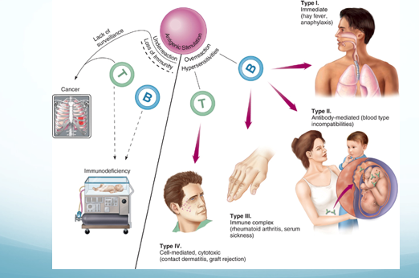
Also tested
- Cancer and immune dysfunction. Cancer is both a cause and an effect: immune failure permits it, and the tumor then suppresses immunity. Immune surveillance normally keeps cancer in check, and successful tumors evade and actively manipulate the response once established.
- Four immunopathologies. The four categories are allergy, autoimmunity, immunodeficiency and cancer; allergy and autoimmunity are overreactions, while immunodeficiency and cancer are underreactions.
7.2 · Objective 2 — The four hypersensitivities and their diseases
Also tested
- Arthus reaction. It is localized dermal injury from inflamed blood vessels, a vasculitis typically following a second injection of vaccine at a site, and normally self limiting.
The cells shared by defense and allergy
| Cell | Where / what | Defensive role |
|---|---|---|
| Mast cells | On epithelial surfaces; immunoglobulin E on the surface; filled with cytokine granules | — |
| Eosinophils | Granulocytes that release toxic mediators in an immunoglobulin E response | Eukaryotic parasites |
| Basophils | Rare granulocytes that initiate a type 2 helper T cell response and production of immunoglobulin E | Helminths |
Predisposition. A generalized predisposition to allergy is familial — not a predisposition to a specific allergy. Allergy is affected by age, infection and geographic area; atopic allergies may be lifelong, outgrown, or develop later in life. The four groups are defined by the effector mechanism, and the reaction can differ with the mechanism of exposure.
| Type | Mechanism | Examples |
|---|---|---|
| I Immediate | Immunoglobulin E mediated. Cell-bound antibody is crosslinked and releases inflammatory mediators; mast cells, basophils and eosinophils involved | Hay fever, hives, anaphylactic shock |
| II | Initiated by immunoglobulin G and M. Free antibody binds cell surface antigens; complement activated; cell lysis by the membrane attack complex and phagocytosis | Transfusion reactions |
| III | Initiated by immunoglobulin G and M. Free antibody binds soluble antigens forming immune complexes, which embed in basement membranes and start inflammation (phagocytosis and complement) | Serum sickness; autoimmune conditions such as lupus |
| IV Delayed | T cell mediated. Cytotoxic cells destroy tissue | Contact dermatitis |
Allergens and the type I mechanism
Allergens are immunogenic: proteins, or lower molecular weight haptens. They typically enter through epithelial portals — respiratory, gastrointestinal, skin — and the organ where the allergy shows may or may not be the portal of entry.
| Dose | What happens |
|---|---|
| Sensitizing dose (first contact) | Specific B cells form immunoglobulin E, which attaches to mast cells and basophils. Generally no signs or symptoms. |
| Provocative dose (later contact) | The same allergen binds the immunoglobulin E on the mast cell (each cell binds 10,000–40,000 immunoglobulin E); mast cells degranulate, releasing inflammatory cytokines. |
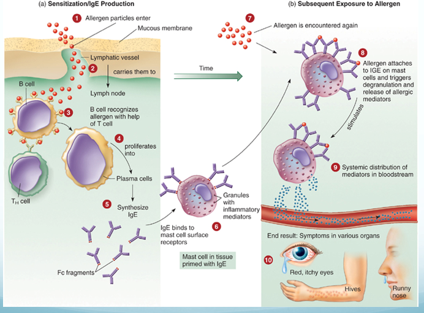
General targets are the skin, upper respiratory tract, gastrointestinal tract and conjunctiva (rashes, itching, redness, rhinitis, sneezing, diarrhea, tears); systemic targets are smooth muscle, mucous glands and nervous tissue (vascular dilation and constriction changing blood pressure and respiration).
| Manifestation | Mechanism |
|---|---|
| Urticaria (hives) | Mast cells in the skin release histamine → raised, itchy swelling |
| Angioedema | Activation of mast cells deeper in the skin |
| Atopic dermatitis (eczema) | A more prolonged allergic response in the skin |
| Allergic rhinitis (hay fever) | Inhaled allergen; histamine raises capillary permeability and nasal mucus; eosinophils are attracted from blood, release mediators and are shed into the nasal passage |
| Food allergy | Vomiting, diarrhea and urticaria. Local histamine acts on intestinal epithelium, vessels and smooth muscle; urticaria appears because antigen enters blood vessels and is carried to the skin |
| Allergic asthma | Acute: bronchial smooth muscle contraction, more mucus, airway obstruction. Leads to chronic asthma, which is type IV, mediated by cytokines and eosinophil granules |
Anaphylaxis
Cutaneous anaphylaxis is the wheal and flare skin reaction — the one used in allergy diagnosis. Systemic anaphylaxis is sudden respiratory and circulatory disruption that can be fatal in minutes. Allergen and route vary: bee stings, antibiotics and serum by injection; foods such as peanuts by mouth. The allergen reaches the bloodstream and activates connective tissue mast cells around blood vessels throughout the body. Fluid leaves the blood → drastic fall in blood pressure → tissue swelling → organ damage → death by asphyxiation from constricted airways; 500–1000 deaths a year in the United States.
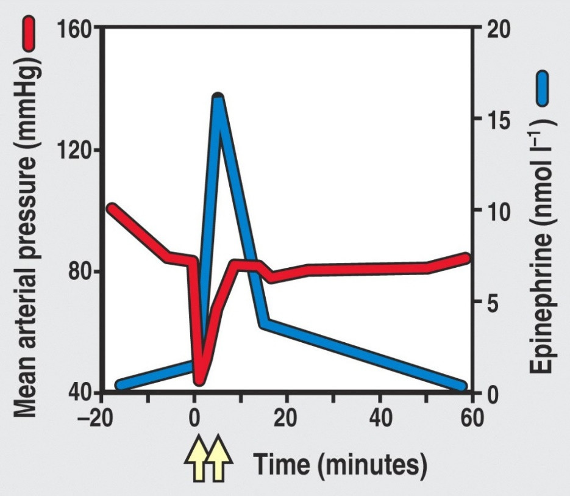
Late phase reaction. Immunoglobulin E reactions have an immediate response (the wheal and flare, from mast cell degranulation) followed about 6 hours later by a late phase reaction mediated by synthesized products such as leukotrienes. It attracts more cells, including eosinophils, whose cytokines enhance inflammation and make the tissue more sensitive next time. In asthma, measured as forced expiratory volume in 1 second, the immediate response is under 1 hour and the late phase response over 6 hours.
Types II, III and IV and their diseases
| Type | Key features | Diseases |
|---|---|---|
| II | Lyses foreign cells; immunoglobulin G or M; stimulates complement | Transfusion reactions (ABO); Rh factor — hemolytic disease of the newborn; some autoimmune: autoimmune hemolytic anemia, myasthenia gravis (acetylcholine receptors) |
| III | Immunoglobulin G and M (sometimes A) with complement; complexes deposit in basement membranes of epithelial tissues; needs a large amount of antigen; symptoms delayed hours to days; joints, skin and kidney typical | Serum sickness (foreign animal proteins — horse serum for tetanus, animal hormones or drugs; complexes in heart, kidneys, skin, joints). Arthus reaction (localized dermal vasculitis after a second vaccine injection at one site; self-limiting). Autoimmune: post-streptococcal glomerulonephritis, systemic lupus erythematosus, rheumatoid arthritis |
| IV | Delayed; T cell mediated; activation of and damage by T cells | Infectious allergy (tuberculosis, leprosy, syphilis, histoplasmosis, toxoplasmosis, candidiasis); tuberculin skin test; contact dermatitis from plants, metals, cosmetics; graft rejection |
Contact dermatitis follows the same two-dose logic as type I, but with T cells: first contact is the sensitizing dose; later contact is the reactive dose, with tissue damage from macrophage cytokines and cytotoxic T cells.
7.3 · Objective 3 — Diagnosing, treating and preventing allergies
First decide whether the patient has allergy or infection. Then:
| Test | Use |
|---|---|
| Skin testing — skin prick, intradermal | Reads wheal and flare reactions |
| Blood tests | Specific immunoglobulin E; increased basophils |
| Physician-supervised challenge | Food allergy when other tests are inconclusive |
| Patch test | Contact dermatitis (type IV) |
Management of type I hypersensitivity has three general methods: prevention, pharmacological control and desensitization. Prevention means modifying the environment and behaviors to avoid the allergen.
| Drug | Action |
|---|---|
| Corticosteroids | Inhibit lymphocytes to reduce immunoglobulin E |
| Cromolyn sodium | Blocks mast cell degranulation |
| Montelukast sodium | Blocks leukotriene synthesis |
| Omalizumab | Monoclonal antibody against immunoglobulin E |
| Antihistamines | Bind histamine receptors on target organs |
| Epinephrine | Reverses airway constriction; re-establishes endothelial tight junctions |
Desensitization (allergen-specific immunotherapy). The most common form is subcutaneous immunotherapy: small amounts of allergen by injection. The injected allergen stimulates high levels of allergen-specific immunoglobulin G that blocks the allergen from reaching the immunoglobulin E, so mast cells do not degranulate. It improves reactions in about 80% of those who complete it.
“Of course it’s not that simple”: desensitization also activates regulatory T cells, which inhibit T cell activation of B cells and release anti-inflammatory cytokines, and induces mediators that damp T cell proliferation and mast cell and eosinophil activity. Sublingual immunotherapy places allergen under the tongue as a tablet or liquid; it is used more elsewhere than in the United States (which has tablets for pollen and dust mite). A 4-year trial of a peanut dose equal to 1/75 of a kernel was effective and safe, protecting against accidental exposure; it has also worked for kiwi, hazelnut, milk and peach.
7.4 · Objective 4 — The mechanism of transfusion reactions
A transfusion reaction is type II. Donor and recipient are matched for the ABO blood group antigens because red blood cells carry no major histocompatibility complex molecules — ABO is what the immune system sees. You carry antibodies in your serum against the ABO antigens you lack. Transfusions are temporary, and an ABO incompatibility can be fatal through complement activation and cell lysis.
| Step | Detail |
|---|---|
| Cross-match | Recipient’s serum against donor’s red cells. Not the reverse: even whole blood carries too little donor antibody to coat the recipient’s cells densely enough to react |
| Consequences | Red cell destruction → blocked glomeruli, fever, jaundice. Even incomplete complement activation leaves antibody-coated cells for natural killer cells and macrophages |
7.5 · Objective 5 — The immunology of transplantation and tissue histocompatibility
Rejection runs both ways — the host may reject the graft, and the graft may reject the host — and it is governed by the major histocompatibility complex: different grafts succeed to different degrees because of its compatibility.
| Graft | Source |
|---|---|
| Autograft | Self (skin, gum or vein graft) |
| Isograft | Genetically identical twin |
| Allograft | Another member of the same species |
| Xenograft | Another species |
| Solid organ problem | Type | Mechanism |
|---|---|---|
| Hyperacute rejection | II | Preexisting antibody against graft antigens; the graft becomes engorged and purple from hemorrhage and fails |
| Acute rejection | IV | Effector T cells respond to human leukocyte antigen differences between donor and recipient |
| Chronic rejection | III | Months or years later; immune complexes in the graft’s vessel walls thicken them until blood supply fails. Causes failure of more than half of kidney and heart transplants after 10 years or more |
| Graft versus host disease | IV | Donor cells attack host tissue |
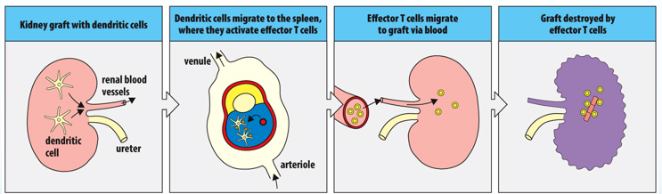
| Tissue | Matching requirement | Why |
|---|---|---|
| Cornea (first organ successfully transplanted) | Succeeds even without a human leukocyte antigen match | The eye downregulates T cells, macrophages, neutrophils and complement so inflammation cannot impair vision |
| Liver | Human leukocyte antigens not assessed; ABO blood group is | Architecture and vascularization; hepatocytes carry very little class I and no class II; constant exposure to digestive proteins makes it tolerant |
| Bone marrow | Most sensitive to human leukocyte antigen discrepancies | Used for genetic disorders and cancers. Sensitivity can cause graft versus host disease: systemic, with skin rash, muscle, liver and gastrointestinal involvement, in about 30% of marrow recipients |
Dealing with graft issues: minimize rejection by tissue matching human leukocyte antigens (mixed lymphocyte reaction, tissue typing), and with immunosuppressive drugs — purine analogs, corticosteroids, tacrolimus and cyclosporine, rapamycin (sirolimus).
7.6 · Objective 6 — The etiology of autoimmune conditions
In autoimmunity the immune system has lost tolerance to autoantigens and forms autoantibodies and sensitized T cells against them, destroying self tissue. It involves all hypersensitivity types except type I. There are genetic and gender predispositions: autoimmunities run in families, and women are more likely than men to have them. Disruption can be systemic or organ specific.
| Origin | Mechanism | Examples |
|---|---|---|
| Sequestered antigen theory | Some tissues are immunologically privileged during embryonic growth; damaged later, they release antigens that are attacked | Central nervous system, lens of the eye, thyroid, testes. Trauma to one eye releases intraocular antigens that activate T cells, which attack both eyes (slide 55) |
| Molecular mimicry (a normal immune response) | Foreign and self antigens are similar, so the response cross-reacts | Rheumatic fever (cross-reactive strep antigen; antibodies react with heart tissue); Lyme disease arthritis (Borrelia burgdorferi); reactive arthritis (Shigella, Salmonella, Campylobacter); type 1 diabetes (coxsackie virus A and B, echovirus, rubella) |
| Noninfectious response | Tissue damage without infection | The eye trauma example above |
| Thymic senescence | The thymus is most active in fetal and early neonatal life, then involutes (replaced by fat). Premature thymic aging is characteristic of young people with autoimmune disorders; decreased output may mean less efficient T cell development and more opportunistic infection, cancer and autoimmunity | The mechanism is unclear |
| Disease | Target | Result |
|---|---|---|
| Graves’ disease | Autoantibodies attach to receptors on thyroxine-secreting follicle cells | More thyroxine — hyperthyroidism |
| Hashimoto’s thyroiditis | Autoantibodies and T cells destroy follicle cells | Less thyroxine — hypothyroidism |
| Diabetes mellitus (type 1) | Insulin-producing cells of the pancreas | Reduced insulin |
| Myasthenia gravis | Autoantibodies bind acetylcholine receptors | Pronounced muscle weakness |
| Multiple sclerosis | Myelin sheath damaged by T cells and autoantibodies; may follow Epstein-Barr or a retrovirus | Paralyzing neuromuscular disease |
Slides 58–60 tabulate further type II, III and IV autoimmune diseases with their autoantigens. They were named in the lecture as charts not to memorize.
Also tested
- Autoimmune predisposition. Women are affected more than men, and autoimmunities also run in families.
7.7 · Objective 7 — Primary versus secondary immunodeficiency
Components of the immune response are absent; deficiencies can involve B cells, T cells, phagocytes and complement.
| Primary | Secondary | |
|---|---|---|
| When | Congenital — usually genetic errors | Acquired after birth, from natural or artificial agents |
| Examples | Agammaglobulinemia (B cell defect, no antibodies → more bacterial infections). DiGeorge syndrome (T cell defect; thymus missing or abnormal → fungal, protozoan, helminth, viral infections). Severe combined immunodeficiency (both lymphocyte limbs missing or defective; no adaptive response). Complement and phagocyte deficiencies | Infection and organic disease — the human immunodeficiency virus targets T helper cells, suppressing immunity overall; chemotherapy or radiation; blood cell cancers |
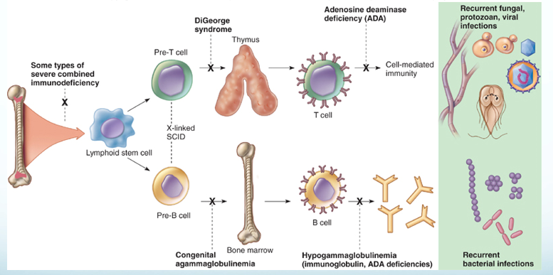
Also tested
- Adenosine deaminase deficiency. It causes some types of severe combined immunodeficiency, a congenital, primary defect.
7.8 · Objective 8 — The mechanisms of carcinogenesis
Cancer cells carry genetic alterations that disrupt the normal cell division cycle. Possible causes: errors in mitosis, genetic damage, activation of oncogenes, or retroviruses. Tumors may be benign (nonspreading, self-contained) or malignant (spreading from the tissue of origin to other sites). Immune surveillance keeps cancer “in check.”
Transformation: a cancer arises from a single cell that has accumulated multiple mutations; oncogenes are activated by radiation, chemicals or oncogenic viruses (papillomavirus and cervical carcinoma, hepatitis B virus and liver cancer, among others).
| Necessary characteristics of cancer cells |
|---|
| They stimulate their own growth · ignore growth-inhibiting signals · avoid death by apoptosis · develop a blood supply (angiogenesis) · leave their site of origin to invade other tissues (metastasis) · replicate constantly · evade and outrun the immune response |
| Tumor antigens (more than 1000 identified) | Where found |
|---|---|
| Tumor specific | On tumor cells, not on normal cells. Derived from viral proteins, mutated cellular proteins or amino acid recombinations |
| Tumor associated | On tumor cells and on normal cells in smaller amounts |
Also tested
- Tumor escape from natural killer cells. When tumor cells cleave a stress molecule that natural killer cells recognize and release it in soluble form, the tumor cell escapes being killed: the soluble molecule binds the killing receptor on natural killer and gamma-delta T cells.
7.9 · Objective 9 — Comparing immunotherapy strategies
| Strategy | How it works | Status / use |
|---|---|---|
| Immune checkpoint inhibitors | Block checkpoint proteins binding their partner, preventing the “off” signal so T cells keep killing. Do not kill cancer cells directly | Melanoma, some lung cancers |
| Adoptive cell therapy | Patient’s own cells engineered outside the body and returned | Tumor infiltrating lymphocytes: in development, not approved. CAR-T (chimeric antigen receptor T cells): approved for blood cancers. Chimeric antigen receptor natural killer cells: mostly in trials, including solid tumors |
| Monoclonal antibodies | Diagnosis and elimination of cancer cells; can carry a chemotherapy drug or radionuclide (anti-CD20 plus radionuclide irradiates malignant B cells; anti-CD30 plus auristatin stops lymphoma cells forming a mitotic spindle) | More than 100 approved by the Food and Drug Administration |
| Cytokines | Interleukin 2 (aldesleukin): more cytotoxic T and natural killer cells; interferon alpha: activates natural killer and dendritic cells; growth factors: erythropoietin (red cells), interleukin 11 (platelets) | Interleukin 2: metastatic kidney cancer, melanoma. Interferon alpha: melanoma, Kaposi’s sarcoma, several blood cancers |
| Coley’s toxins | 1890s: bone sarcomas regressed with streptococcal skin infection; mix of killed streptococci and Serratia marcescens | Fell from favor with radiation and chemotherapy |
| Oncolytic viruses | Infect normal and cancer cells but replicate in and lyse only tumor cells; some natural (mumps), others engineered. Challenge: the immune system may clear them first | A few approved; one in the United States, for melanoma |
| Cancer vaccines | Prophylactic — prevent the infection (hepatitis B → hepatocarcinoma; papillomavirus → reproductive cancers). Therapeutic — activate immunity against tumor antigens | Bacillus Calmette-Guérin (weakened tuberculosis organism): bladder cancer. Sipuleucel-T: metastatic, castration-resistant prostate cancer |
Slide 78 also says granulocyte and granulocyte-macrophage colony-stimulating factors “stimulate growth of T cells.” That is the slide’s wording; no quiz question turns on it.
Source: Lecture 7 — Disorders in Immunity (Dr. Webster), Slides 1–81, and the PAJ 5200 syllabus instructional objectives.
Also tested
- Tumor infiltrating lymphocyte therapy. It is in development, not yet approved; these are cytotoxic T cells expanded to a therapeutic amount.
- Oncolytic viral therapy. The main challenge is that immunity may clear the virus first; only a few are approved, just one in the United States, for melanoma.
8 · Diagnosing Infections
Instructional Objectives
- Recall common infectious agents and the diseases that they cause.
- Recall microbial physiology including metabolism, regulation and replication.
- Describe the mechanisms by which an infectious agent causes disease.
- Describe the epidemiology and transmission of infectious agents.
- Discuss common mechanisms of antimicrobial action and resistance.
- Describe antimicrobial treatment strategies.
- Explain preventative interventions employed to prevent infectious diseases.
Two recordings, both transcripts read and compared; the quotes below appear in both. Part 1 (45 minutes) runs to the break around slide 43 (“this is a very logical place for us to pause”). Part 2 (about 11 minutes) picks up after the break and covers the rest of the deck: complement fixation, fluorescent antibodies, immunoassays, in vivo testing and viral diagnosis. The lecture is taught through laboratory anecdote and gives little exam steer — the same pattern as this lecturer’s Exam 1 lectures — so the two things it does stress are marked below.
| What was said | What it means for you |
|---|---|
| “You don’t have to bog down in a lot of the details… I highlighted some things for you. So blood agar is useful for detecting hemolysis… the take-home message is that the blood agar is useful for detecting hemolysis, especially for pathogenic Gram-positive bacteria like staph aureus or strep pyogenes.” [about minute 18] | The one explicit priority in the recording. Know what each plate is for (slides 17–20) rather than every reagent. Staphylococcus and Streptococcus return in the medically important cocci lecture. |
| Southern, Northern, Western, Eastern: “Southern was the first, was actually a man’s name, DNA [deoxyribonucleic acid]. RNA [ribonucleic acid] is Northern. Western is protein. And then Eastern is carbohydrates or other epitopes.” [about minute 42] | A memory hook for slides 41–42: only “Southern” is a person (Edwin Southern); the other compass points are a joke on his name. |
| Genotypic methods for organisms that are hard to grow: Legionella “you have to use live amoeba”; “tuberculosis, leprosy, again, very, very difficult to grow.” [about minute 9] | Matches slide 8 (Mycobacterium, Legionella): culture-free methods earn their cost on slow or difficult organisms. |
| “This is relevant to Koch’s postulates, but remember, not all organisms will work for Koch’s postulates. So what if the infection turns out to… be viral?” [about minute 27] | Slide 24’s caution: finding an organism is not proof it causes the disease. |
| After the break (part 2) | |
| Complement fixation: “this one is absolutely backwards of what you would normally think of as a microbiology test… the most important one is gonna be the sheep’s red blood cells… if the red blood cells burst, then your test is negative, because that means that the complement is free.” [part 2, 0:15–1:34] | ★ Said three ways in one minute (“backwards”, “exactly opposite or counterintuitive”, “completely backwards”). Lysis = negative; no lysis = positive (slides 45–46, section 8.4). |
| In vivo allergy testing: “what you’re looking for is a fairly rapid antigen-antibody reaction. So which antibody class would be useful for allergy testing? IgE [immunoglobulin E]… Remember, these are all good questions.” [part 2, 7:51–8:13] | ★ Ties slide 52–53’s skin-prick grid to Lecture 7: the wheal and flare of an allergy test is a type I, immunoglobulin E reaction (section 7). The tuberculin skin test on the same slide is the delayed, T cell (type IV) one. |
| Fluorescent antibodies: “you have to know a little bit beforehand about what antibody and antigen reaction you’re looking for”; it needs a microscope with fluorescent optics and “a really, really dark microscope room.” [part 2, 1:38–2:36] | The dye is carried by a specific (monoclonal) antibody (slide 47), so you choose it for the organism or antibody you suspect: another test that needs a hypothesis first, like the rapid strep test. |
| Enzyme-linked immunosorbent assay: “you can either be qualitative, yes or no, or it can be quantitative”, read by a plate reader; the “eight by twelve plates” and an eight-channel pipettor let a technician “run through a lot of samples very, very quickly”; “valuable for detecting HIV [human immunodeficiency virus].” [part 2, 3:24–6:53] | Slide 50’s 96-well plates and 8-channel pipettors are the point: throughput. The plate on slide 51 is a human immunodeficiency virus antibody screen. |
| Viruses: “very difficult to grow in the lab. It might require human tissue culture. It might require animal tissue culture”; rapid point-of-care kits give an answer in “10 minutes or less” — strep, influenza A, COVID [coronavirus disease 2019]. [part 2, 8:15–9:11] | Slide 54: viruses are not cells and need a host cell, so culture is labor intensive and rapid antigen-antibody tests fill the gap. (The rapid strep test in her list detects a bacterium; it is there as the familiar example of the format.) The deoxyribonucleic acid and ribonucleic acid virus lectures themselves are the last two of the semester, not this exam [9:18]. |
Where the slide is wrong — chocolate agar: slide 18 and the recording both say chocolate agar is “mainly used for anaerobic culturing.” It is not an anaerobic medium. It is an enriched medium for fastidious organisms such as Neisseria, usually incubated in extra carbon dioxide — the candle jar the lecturer goes on to describe, and what the Lecture 9 deck says (slide 57; section 9.11). Anaerobes need oxygen excluded altogether. No question keys “anaerobic” for chocolate agar.
8.1 · Objective 1 — Identifying the agent: the three categories
| Category | What it examines | Needs culture? |
|---|---|---|
| Phenotypic | Observable microscopic and macroscopic characteristics (phenotype = “the physical expression of genes”): morphology, physiology and biochemistry, chemical analysis, sensitivity to antimicrobial drugs | Usually — so may take longer |
| Genotypic | Genetic makeup: deoxyribonucleic acid and ribonucleic acid sequence analysis, restriction fragment length polymorphism, specific gene sequencing to build phylogenies, electrophoresis | Usually not |
| Immunological | Serology — antibody-antigen reactions: agglutination, precipitation, immunoelectrophoresis, complement fixation, immunofluorescence, immunoassays, in vivo allergy testing | May or may not — but always exploits antigen-antibody specificity |
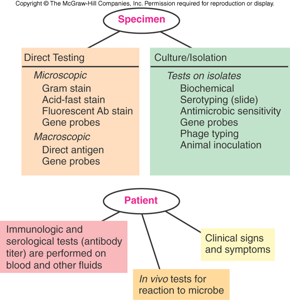
Results come in two categories, presumptive or confirmatory. Immune tests are generally easier (and more accurate) than testing for the microbe itself: the rapid strep test takes 10–15 minutes — but you need a hypothesis first to choose the test (fever, sore throat and pus pockets on the tonsils suggest strep throat).
Also tested
- Rapid immunological tests. You need a hypothesis to target it: fever, sore throat and pus-pockets on the tonsils lead you to suspect strep throat, and only then does the rapid test answer the question.
8.2 · Objective 1 — Genotypic methods
Genotypic methods assess the organism’s genetic makeup and need no culture — valuable for slow-growing Mycobacterium and hard-to-grow Legionella. Precise, automated methods give quick results, and faster, more accurate diagnosis means proper treatment begins in a timely manner.
| Technique | Key facts |
|---|---|
| deoxyribonucleic acid probe hybridization / restriction fragment length polymorphism (“deoxyribonucleic acid fingerprinting”) | Probes complementary to a microbe’s specific sequences bind. Restriction enzymes cut deoxyribonucleic acid into fragments whose lengths differ between organisms |
| Polymerase chain reaction | A thermal cycler amplifies specific pieces of deoxyribonucleic acid or ribonucleic acid; basic concept invented by Kary Mullis and colleagues. Guanine plus cytosine content helps taxonomic determination, not necessarily a specific identification |
| Ribosomal ribonucleic acid sequencing | Compares base sequences to establish relationships: 16S ribosomal ribonucleic acid genes for bacteria (prokaryotes), 18S for eukaryotes; builds phylogenetic trees (slide 29: the oral microflora) |
Also tested
- Genotypic methods. Their major practical advantage is that culture is not necessary. This matters most for slow-growing organisms such as Mycobacterium and difficult ones such as Legionella, since the delay of culture is avoided entirely.
8.3 · Objective 1 — Serology, agglutination and precipitation
Serology is in vitro diagnostic testing of serum. Antibodies are extremely specific, so the methods are very sensitive. Visible results: precipitates, color changes, or released radioactivity. Tests identify antibody and measure how much is present — the titer, often reported in binding antibody units. A known antigen can test a patient’s serum (serological diagnosis), or known antibody can identify an unknown microbe (serotyping).
| Agglutination | Precipitation | |
|---|---|---|
| Antigen | Whole-cell or insoluble | Soluble, made insoluble by antibody |
| What you see | Large visible clumps that sink | A visible precipitate; needs a gel or liquid matrix |
| Sensitivity | Generally more sensitive than precipitation; run on a card or slide | Very sensitive |
| Uses | Blood typing; rapid syphilis diagnosis; cold agglutinins for mycoplasmas; Weil-Felix test for rickettsial disease; latex agglutination for pregnancy; color-changing rapid strep tests are a modified agglutination technique | Tube precipitation; Ouchterlony double diffusion in agar gel; immunoelectrophoresis identifies which antibody class (immunoglobulin G, M and so on) binds antigen in serum |
Also tested
- Serological test reactions. They can produce precipitates, color change, radioactivity, and report not only presence but amount, the titre, often given in binding antibody units.
- Agglutination tests. The Weil-Felix test for rickettsial diseases uses agglutination, alongside blood typing, rapid syphilis diagnosis, cold agglutinin for mycoplasmas and the latex-agglutination pregnancy test.
- Serology. Serology is in vitro diagnostic testing of serum samples. Because antibodies have extreme specificity for antigens, these are very sensitive methods.
- Agglutination testing. It detects whole-cell or insoluble antigens, which antibody cross-links into complexes that settle out as large visible clumps, generally sinking to the bottom of the container.
- Agglutination clumps. They settle to the bottom of the container, which makes the result visible without instrumentation and lets the test run on a card or slide.
8.4 · Objective 1 — Blots, complement fixation, fluorescence, immunoassays, in vivo tests and viruses
| Blot | Detects | Notes |
|---|---|---|
| Southern (about 1975) | Specific deoxyribonucleic acid sequences | The original, invented by Edwin Southern |
| Northern (about 1977) | ribonucleic acid (gene expression) | Oncogenes; transplant rejection |
| Western (about 1981) | Proteins | Electrophoresis then an immunoassay; bands where antibody binds. Second test used to verify human immunodeficiency virus status; also bovine spongiform encephalopathy, Lyme disease, hepatitis B |
| Eastern (about 1982) | Proteins, lipids, carbohydrate epitopes | Post-translational products |
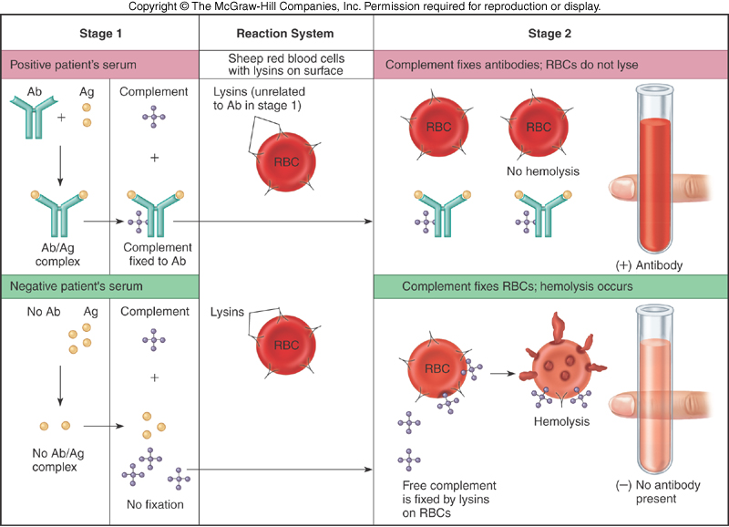
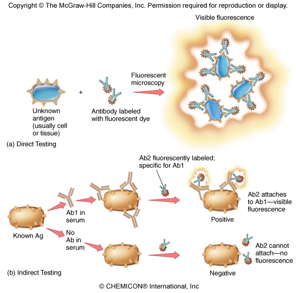
| Method | Key facts |
|---|---|
| Fluorescent antibody testing | A monoclonal antibody labeled with a fluorescent dye shows cells or aggregates, by direct or indirect methods |
| Immunoassays | Extremely sensitive — detect trace amounts of antigen or antibody. Radioimmunoassay: labeled with radioactive isotopes. Enzyme-linked immunosorbent assay: an enzyme-antibody complex produces a colored product (chromogen) when its substrate is added; run in 96-well plates |
| In vivo testing | Antigen introduced into the body to detect antibody or sensitivity: tuberculin skin test, allergy testing |
| Viruses | Special difficulty: they are not cells and need a specific host cell to replicate, so they are labor intensive to culture. Rapid point-of-care tests may use antigen-antibody reactions |
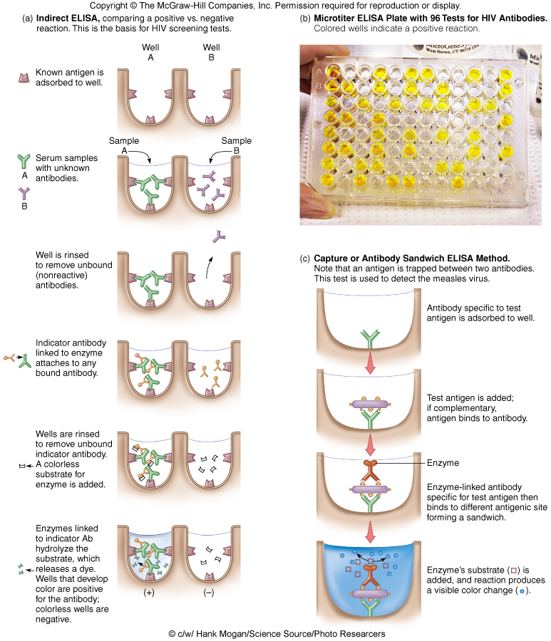
Also tested
- Northern blot. It is used to study gene expression by detecting RNA, and is useful in the study of oncogenes and in rejection of transplanted organs.
- Western blot. It is used to verify HIV status as a second test, and has also been used definitively for bovine spongiform encephalopathy, Lyme disease and hepatitis B.
- Original electrophoretic blotting. It was invented by Edwin Southern, around 1975, to detect specific DNA sequences in DNA samples; the Northern, Western and Eastern blots all take their names from his.
- In vivo testing. Unlike serology, antigen is introduced directly into the body to determine the presence or absence of antibodies; the tuberculin skin test and allergy testing are the named examples.
8.5 · Objective 2 — Microbial physiology in the laboratory
Phenotypic identification reads the organism’s physiology and metabolism.
| Method | What it looks at |
|---|---|
| Microscopic morphology | Fresh or stained organisms: cell shape, size, stain reaction (Gram, flagellar, acid-fast), cell structures. Immediate direct examination also uses direct fluorescent antibody and direct antigen testing |
| Macroscopic morphology | Colony appearance on test plates: texture, size, shape, pigment, growth requirements |
| Physiological / biochemical | Presence or absence of particular enzymes or metabolic pathways — product formed means the enzyme is present |
| Chemical analysis | Specific chemical composition: cell wall peptides, cell membrane lipids |
| Common test or medium | What it shows |
|---|---|
| Carbohydrate fermentation, amino acid utilization, hydrolysis of gelatin, starch or lipids, catalase, oxidase, coagulase, hemolysins | The common biochemical tests |
| Blood agar | Detects hemolytic activity |
| Chocolate agar | The slide says “mainly used for anaerobic culturing”; in fact an enriched medium for fastidious organisms, grown in extra carbon dioxide (candle jar), not anaerobically (see the recording box above and section 9.11) |
| Mannitol salts agar | Selects for salt tolerance and differentiates by the pH change of mannitol fermentation |
| Simmons citrate | Citrate utilization; bromthymol blue turns blue as pH rises |
| Triple sugar iron slant | Several pH changes observable on one slant |
| Urea broth | Urea hydrolysis raises pH; hot pink = urease present |
| Rapid test strips (API 20E) | Many biochemical tests on one strip |
| Bacteriophage typing; animal inoculation | Phage susceptibility; growth in an animal (for example Mycobacterium leprae) |
Replication, the last part of this objective, appears once: viruses cannot be cultured like bacteria because they replicate only inside a specific host cell (slide 54).
Also tested
- Simmons citrate medium. A blue color indicates a rising pH, reported by the bromthymol blue indicator, because citrate utilization drives the pH up.
- Macroscopic morphology. It assesses colony appearance on culture media, including texture, size, shape, pigment and growth requirements, all observed with the naked eye rather than under the microscope.
- Immediate direct examination. The Gram stain and acid-fast stain are named for it, together with direct fluorescent antibody and direct antigen testing, which report before anything has been cultured.
8.6 · Objective 3 — Is the organism causing the disease?
The deck does not teach disease mechanisms in this lecture. What it does say is the diagnostic form of the question: whether the microbe recovered is actually causing the disease, or whether you are simply detecting normal flora — the reasoning of Koch’s postulates, traditional and molecular (slide 24). Some virulence enzymes are themselves the test: hemolysins on blood agar and coagulase appear among the common tests (slide 17).
8.7 · Objective 4 — Specimens, handling and transmission risk
The deck’s epidemiology here is the specimen itself. All specimens should be considered potentially infectious. Results depend on collection, handling, transport and storage; some specimens need a preservative or fixative, others cooling, heating or other special treatment. Aseptic procedures and universal precautions (gloves, face shields, masks) mitigate but do not eliminate the risk of transmission. Slides 11–12 show collection sites and methods (nasopharynx, throat, sputum, blood, cerebrospinal fluid, urine by clean catch or catheter, feces, skin, genital swabs); a specimen then goes to direct testing or to cultivation, isolation and identification.
Also tested
- Phenotypic methods. They may take longer to reach a diagnosis because the microbes must be cultured: observable characteristics, biochemical reactions and sensitivity testing all depend on having grown the organism first.
8.8 · Objectives 5 & 6 — Antimicrobial sensitivity testing and treatment strategy
The Kirby-Bauer disk-diffusion test gives which drug is effective and at what dose, and may indicate which combinations can be used. Larger zones of inhibition mean a more effective agent. Minimum inhibitory concentration strips add the concentration needed. For treatment strategy the deck’s point is speed: faster, more accurate (genotypic) diagnosis means proper treatment can begin in a timely manner. Mechanisms of action and resistance themselves were Lecture 2’s subject.
Also tested
- Zone of inhibition. A larger zone indicates a more effective agent; minimum inhibitory concentration strips give the same information as a concentration, the lowest level that stops growth.
8.9 · Objective 7 — Preventative interventions
The deck offers one: aseptic procedure and universal precautions during specimen collection and handling, which mitigate but do not eliminate transmission (slide 10). Vaccination and other prevention are not in this deck.
Source: Diagnosing Infections (PAJ5200.Diagnosing Infections-2.pptx), Slides 1–57, and the PAJ 5200 syllabus instructional objectives.
9 · Cocci of Medical Importance
Instructional Objectives
- Compare and contrast the morphology, medium, laboratory tests, biochemical reactions, diseases, and methods of treatment, and prevention of cocci of medical importance.
- Describe the modes of transmission by which humans acquire cocci of medical importance.
59 minutes with Dr. Fair, one recording covering every slide. Both transcripts read and compared (Notability’s own and an independent local transcription, which agree word for word on 97% of the text); every quote below appears in both. The deck names no lecturer; the calendar names Dr. Fair, and the recording is plainly not Dr. Webster’s (“with Dr. Webster earlier, you had the gram-positive rods”, 32:08).
The emphasis is on the slides themselves. She opened with “I tried to highlight some things just for funsies” [0:28]: fourteen passages on fourteen slides are highlighted in yellow in the deck, and each one is marked like this below. Beyond those, the recording adds one priority and one cut:
| What was said | What it means for you |
|---|---|
| “She also discovered the M protein and this M protein, which you might also want to highlight, is important for the ability of these bacteria to avoid phagocytosis.” [21:23] | The one fact she told the class to add to the highlights: M-protein → resistance to phagocytosis (slide 28). In the same breath she said she had changed the slide that morning so it reads that the C-carbohydrates are what the Lancefield groups rest on. |
| “Don’t worry about digging down into the Lancefield letters. The A and the B are the primo ones. So the other letters are just opportunistic infections… don’t bog down too much in the details.” [29:59] | Know groups A (Streptococcus pyogenes) and B (Streptococcus agalactiae) thoroughly. The letters in the slide 26 table beyond A, B and D (the enterococci, which are on the syllabus list) are not worth memorizing, and no question asks them. |
| The catalase test “can’t” be run on colonies taken from blood agar, “because red blood cells also produce the enzyme, so it would give you a false positive indication.” [12:51] | A bench technique the deck does not state. Useful context for slide 18; not quizzed, because it is not on the slides. |
Where the time went (minutes spoken, local transcript): staphylococci about 16 minutes (26%); streptococci and enterococci about 26 (43%), the largest block, of which group A and its Lancefield history took about 9; the Gram-negatives about 18 (31%), though about 5 of those were anecdote over the sexually transmitted infection rate maps on slides 62–66. The quizzes are weighted the same way, 8 / 13 / 9 questions per set.
9.1 · Objective 1 — The decision tree for the Gram-positive cocci
| Step | Staphylococci | Streptococci and enterococci |
|---|---|---|
| Gram stain | Gram-positive, from thick peptidoglycan in the cell envelope; Gram-positive cells are physically strong (whereas Gram-negative cells are chemically strong). Spherical cells in irregular clusters | Gram-positive spherical or ovoid cocci in long chains, commonly in pairs |
| Spores and motility | Staph are always non-spore-forming and non-motile (no spores, no flagella). May produce capsules | Non-spore-forming, nonmotile; can form capsules and slime layers |
| Catalase reaction (hydrogen peroxide) | Catalase positive — bubbles | Catalase negative, though streptococci have a peroxidase system |
| Coagulase | Positive = Staphylococcus aureus; negative = the other staphylococci | — |
| Blood agar (to detect hemolysis) | Staphylococcus aureus hemolysins give clear zones | Beta = complete hemolysis on blood agar plate (a clear zone); alpha = partial hemolysis on blood agar plate, greenish |
| Salt | Withstand high salinity; grow on mannitol salts agar | Do not grow well on mannitol salts agar, which is too saline |
| Next step | — | Beta-hemolytic: bacitracin sensitive = group A, Streptococcus pyogenes; bacitracin resistant = groups B and C. Alpha-hemolytic: optochin sensitive = Streptococcus pneumoniae; optochin resistant = group D and viridans streptococci |
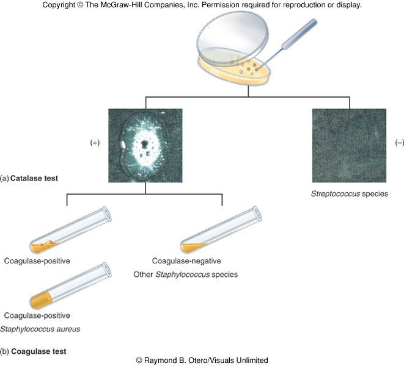
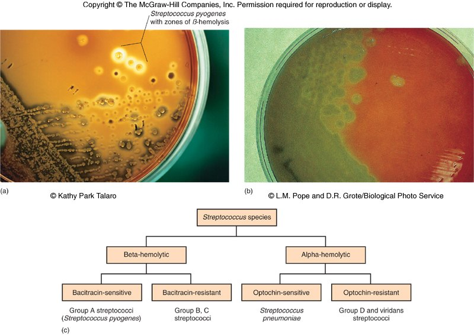
9.2 · Objective 1 — Staphylococcus aureus
Staphylococci are common inhabitants of the skin and mucous membranes; 31 species are in the genus. Staphylococcus aureus grows in large, round, opaque colonies that may be slightly yellowish (aureus = golden), with an optimum growth temperature of 37°C. It is a facultative anaerobe that thrives with or without oxygen, withstands high salinity, extremes of pH and high temperatures, and produces many virulence factors.
| Virulence factor | What it does |
|---|---|
| Coagulase | Coagulates plasma and blood; produced by 97% of human isolates; a significant diagnostic trait for this organism |
| Hyaluronidase | Digests connective tissue |
| Staphylokinase | Digests blood clots |
| Deoxyribonuclease | Digests deoxyribonucleic acid |
| Lipases | Digest oils and other lipids; enhance colonization on skin |
| Penicillinase | Inactivates penicillin (beta-lactamase behaves similarly) |
| Hemolysins (alpha, beta, gamma, delta) | Lyse red blood cells — visible on blood agar |
| Leukocidin | Lyses leukocytes, especially neutrophils and macrophages |
| Enterotoxin | Induces gastrointestinal distress (food intoxication) |
| Exfoliative toxin | Separates the epidermis from the dermis (scalded skin syndrome) |
| Toxic shock syndrome toxin | Induces fever, vomiting, shock and systemic organ damage |
Epidemiology. Present in most environments frequented by humans and readily isolated from fomites. Carriage rate in healthy adults is 20–60%, mostly in the anterior nares, skin, nasopharynx and intestines. Predispositions: poor hygiene and nutrition, tissue injury, a preexisting primary infection, diabetes, immunodeficiency. Methicillin resistance is increasingly community acquired, no longer just hospital acquired, so strains are designated community-acquired or hospital-acquired.
| Disease | Key facts |
|---|---|
| Folliculitis | Superficial inflammation of a hair follicle; usually resolves, can progress |
| Furuncle | A boil: inflammation of a hair follicle or sebaceous gland progresses into an abscess or pustule |
| Carbuncle | Larger, deeper lesion from the aggregation and interconnection of a cluster of furuncles |
| Impetigo | Bubble-like swellings that break and peel away; most common in newborns |
| Osteomyelitis | Infection is established in the metaphysis and an abscess forms |
| Bacteremia | Bacteria in the blood; primary origin is another infected site or medical devices; endocarditis is a possible complication |
| Food intoxication | Ingestion of heat-stable enterotoxins causes gastrointestinal distress |
| Scalded skin syndrome | Toxin induces a bright red flush, blisters, then desquamation of the epidermis |
| Toxic shock syndrome | Toxemia leading to shock and organ failure; classically from improper tampon use in females (see 9.11) |
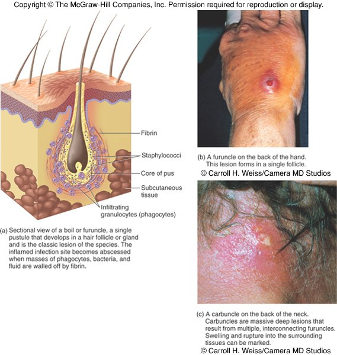
Treatment. 95% of staphylococci produce penicillinase and are resistant to penicillin and ampicillin. Methicillin-resistant Staphylococcus aureus carries multiple resistance, and some strains resist all major drug groups except vancomycin. Abscesses have to be surgically perforated, and the wounds kept thoroughly clean and covered. Systemic infections may need intensive, lengthy antimicrobial therapy.
Prevention. Universal precautions by healthcare providers prevent, or at least reduce, nosocomial infections. Appropriate personal hygiene, and not sharing towels, washcloths, razors or toothbrushes.
Identification. Staphylococci may be isolated from pus, tissue exudates, sputum, urine and blood, and are identified by cultivation, the catalase reaction, biochemical testing and the coagulase reaction.
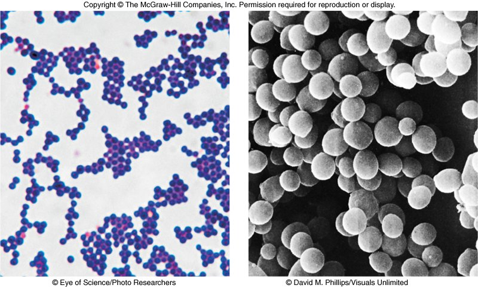
9.3 · Objective 1 — The coagulase-negative staphylococci
Coagulase-negative staphylococci are frequently implicated in nosocomial and opportunistic infections, and they often initiate polymicrobial biofilms, which can lead to further medical complications.
| Organism | Where it lives | Disease |
|---|---|---|
| Staphylococcus epidermidis | Skin and mucous membranes | Endocarditis, bacteremia, urinary tract infection; wound infection |
| Staphylococcus hominis | Around the apocrine sweat glands of the armpits and groin, which produce sweat with a higher lipid content | Wound infection |
| Staphylococcus capitis | Scalp, face, external ear | Wound infection |
| Staphylococcus saprophyticus | Infrequently on skin, intestine, vagina | May cause urinary tract infection |
The first three (epidermidis, hominis, capitis) may all cause wound infections by penetrating broken skin.
9.4 · Objective 1 — Streptococci in general: Lancefield groups and hemolysis
Streptococci are Gram-positive spherical or ovoid cocci in long chains, commonly found in pairs; non-spore-forming, nonmotile; can form capsules and slime layers; facultative anaerobes. They do not produce catalase (catalase negative) but do have a peroxidase system. Most parasitic forms are fastidious and require enriched media, growing as small, nonpigmented colonies on blood agar — but they do not grow well on mannitol salts agar, which is too saline. They are very sensitive to drying, heat and disinfectants.
| Classification | Based on |
|---|---|
| Lancefield (Rebecca Lancefield, 1933) | Cell wall antigens — the C-carbohydrates — giving groups A, B, C and so on. Know A and B; the other letters are not examined. |
| Hemolysis | Often combined with 16S ribosomal ribonucleic acid gene sequencing. Beta = complete hemolysis on blood agar plate: groups A, B, C, G and some D. Alpha = partial hemolysis on blood agar plate: Streptococcus pneumoniae and the others called viridans (viridis is Latin-derived for green, after the greenish color of partial hemolysis) |
Human streptococcal pathogens: Streptococcus pyogenes, Streptococcus agalactiae, the viridans streptococci and Streptococcus pneumoniae, with Enterococcus faecalis alongside. Enterococcus, with Lactococcus, was separated from Streptococcus in 1984 using 16S ribosomal ribonucleic acid gene analysis; the taxonomy is still evolving.
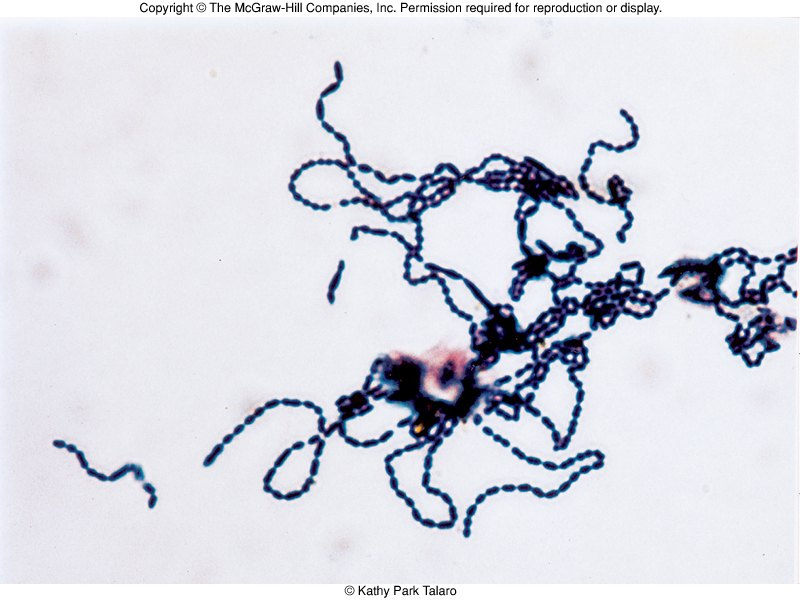
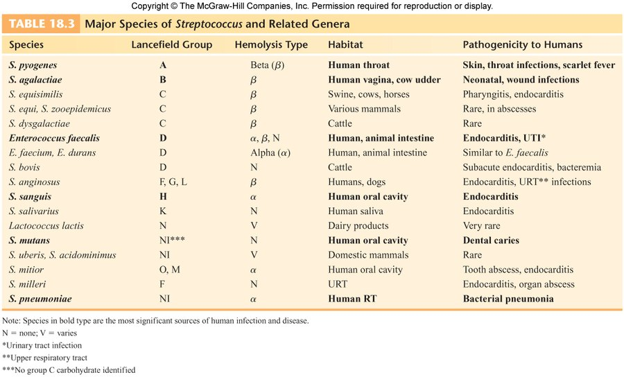
9.5 · Objective 1 — Streptococcus pyogenes (group A)
Beta-hemolytic Streptococcus pyogenes is the most serious of the streptococcal pathogens — Lancefield group A, so sometimes “GAS” (group A Streptococcus). It is a strictly human parasite inhabiting the throat, nasopharynx and occasionally the skin.
| Virulence factor | What it does |
|---|---|
| C-carbohydrates | Protect it against lysozyme; the basis of the Lancefield group |
| Fimbriae | Short protein fibers for adherence |
| ★ M-protein | Contributes to its resistance to phagocytosis |
| Hyaluronic acid capsule | Provokes no immune response |
| C5a protease | Hinders the complement and neutrophil response |
| Streptolysins O and S | Hemolysins; both cause cell and tissue injury |
| Erythrogenic (pyrogenic) toxin | Induces fever and the typical red rash |
| Superantigens | Strong monocyte and lymphocyte stimulants that cause the release of tumor necrosis factor (see 9.11) |
| Streptokinase | Digests fibrin clots |
| Hyaluronidase | Breaks down connective tissue |
| Deoxyribonuclease | Hydrolyzes deoxyribonucleic acid |
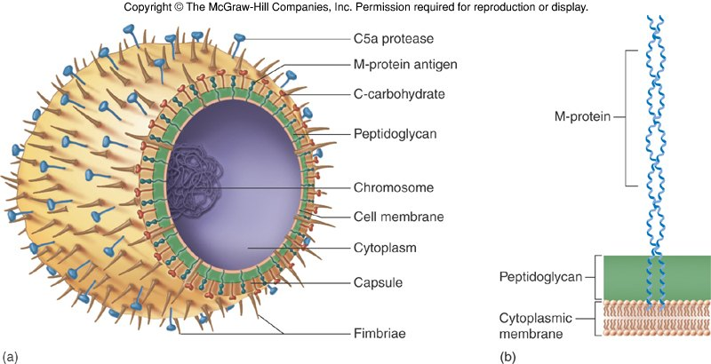
Epidemiology. Humans are the only reservoir of Strep pyogenes; other streptococci may be zoonotic. Inapparent carriers exist. Transmission is by contact, droplets, food and fomites; the portal of entry is generally the skin or pharynx. Children are the predominant group affected, for both skin and throat infections. Systemic infections and progressive sequelae are possible if untreated.
| Disease | Key facts |
|---|---|
| Impetigo (pyoderma) | Superficial lesions that break and form a highly contagious crust; often in epidemics in schoolchildren; also with insect bites, poor hygiene, crowding |
| Erysipelas | Enters through a break in the skin and spreads to the dermis and subcutaneous tissues; can stay superficial or become systemic |
| Streptococcal pharyngitis | “Strep throat” |
| Scarlet fever | A strain carrying a prophage that codes for erythrogenic toxin; can lead to sequelae |
| Septicemia, pneumonia, streptococcal toxic shock syndrome | The other systemic infections |
| Rheumatic fever | Follows overt or subclinical pharyngitis in children: carditis with extensive valve damage, arthritis, chorea, fever |
| Acute glomerulonephritis | Nephritis, increased blood pressure, occasionally heart failure; can become chronic and lead to kidney failure |
Treatment. Groups A and B are commonly treated with penicillin unless it is contraindicated (resistance or allergy). Long-term penicillin prophylaxis may be prescribed for those with a history of rheumatic fever or recurrent strep throat. Big problems abound with antibiotic resistant strains.
9.6 · Objective 1 — Group B Streptococcus, the enterococci, and the identification tests
| Organism | Key facts |
|---|---|
| Group B Streptococcus, Streptococcus agalactiae | Regularly resides in the human vagina, pharynx and large intestine. Can be transferred to the infant during vaginal delivery, causing severe infection: the most prevalent cause of neonatal pneumonia, sepsis and meningitis. Pregnant women should be screened and treated for GBS (group B Streptococcus), usually with intravenous antibiotics during vaginal delivery (see 9.11 on the drug). Also wound and skin infections and endocarditis in debilitated patients |
| Group D enterococci: Enterococcus faecalis, faecium, durans | Normal colonists of the human large intestine; cause opportunistic urinary, wound and skin infections, particularly in debilitated persons. Treatment usually requires multiple antibiotic therapy |
| Groups C and G | Common animal flora, often isolated from the upper respiratory tract; pharyngitis, glomerulonephritis, bacteremia (not examined; “the other letters”) |
Identification. Cultivation and diagnosis ensure proper treatment, preventing complications. Rapid diagnostic tests use monoclonal antibodies that react with the C-carbohydrates (serological or immunological methods). Phenotypic culture methods: the bacitracin disc sensitivity test, the CAMP test and bile esculin hydrolysis.
The CAMP test (named for Christie, Atkins and Munch-Petersen, 1944): a CAMP-factor protein works synergistically with beta-hemolytic Staphylococcus aureus to produce a flame or arrow shape on the blood agar plate. It is time consuming but has been effective in detecting Listeria monocytogenes, a Gram-positive rod whose temperature range is 0–40°C, from food and clinical specimens.
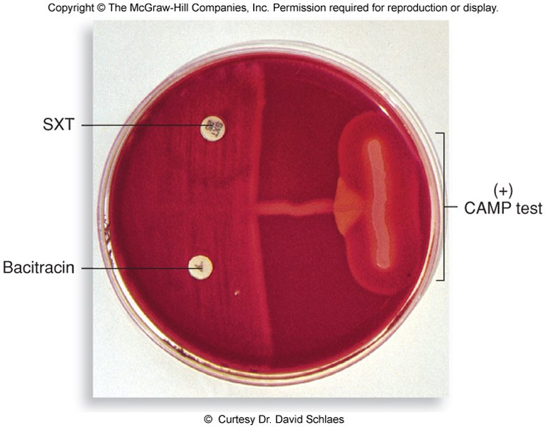
9.7 · Objective 1 — The viridans streptococci and Streptococcus pneumoniae
| Viridans group (alpha-hemolytic) | Streptococcus pneumoniae (the pneumococcus) | |
|---|---|---|
| Members and morphology | Streptococcus mutans, oralis, salivarius, sanguis, milleri, mitis; partially hemolytic, a greenish color around colonies | Small, lancet-shaped cells in pairs and short chains |
| Habitat | The most numerous residents of the gums and teeth, oral cavity; also nasopharynx, genital tract, skin | Nasopharynx: 5–50% of people carry it as normal flora |
| Culture | — | Requires blood or chocolate agar. Capnophilic (carbon dioxide loving): growth improved by 5–10% carbon dioxide. Aerotolerant anaerobes that lack catalase and peroxidases, so cultures may die in high laboratory oxygen |
| Entry and virulence | Not very invasive on their own; dental or surgical procedures may facilitate entrance. Streptococcus mutans produces slime layers that adhere to teeth, the basis of plaque and of dental caries | All pathogenic strains form large capsules, the major virulence factor; the capsule’s specific soluble substance varies among types (about 90 capsular types on the slide) |
| Disease | Gingivitis, periodontitis, bacteremia, meningitis, abdominal infection, tooth abscesses. The most serious is subacute endocarditis: blood-borne bacteria settle on the heart lining or valves and colonize them by forming biofilms. Pre-existing heart disease = high risk | Pneumococcal pneumonia (aspirated into the lungs, where they multiply and provoke an overwhelming inflammatory response) and otitis media (reaching the middle ear by the eustachian tube) |
| Who is at risk | Persons with pre-existing heart disease | Infections are usually endogenous, especially in the immunocompromised; greatest risk in young children, the elderly, the immune compromised, those with other lung disease or viral infection, and people in close quarters. A very delicate bacterium that does not survive long outside its habitat |
| Treatment and prevention | Prophylactic antibiotics before surgery or dental work for certain pre-existing heart conditions (many dentists have stopped except in extreme circumstances) | Traditionally penicillin G or V, but drug resistance is increasing. Two vaccines for high-risk individuals: a capsular antigen vaccine for older adults (effective about 5 years) and a conjugate vaccine for children 2 to 23 months |
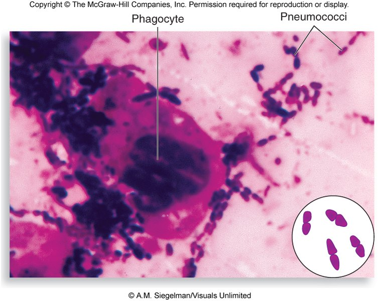
Also tested
- Endogenous pneumococcal infection. 5 to 50% of people carry it in the nasopharynx, and infection usually comes from that carriage, from the person's own flora, especially if the host is immunocompromised.
9.8 · Objective 1 — Neisseria gonorrhoeae and Neisseria meningitidis
The family Neisseriaceae: Gram-negative cocci, and therefore only a thin layer of peptidoglycan; residents of the mucous membranes of warm-blooded animals; genera Neisseria, Branhamella, Moraxella (with reclassifications by 16S ribosomal ribonucleic acid gene analysis). The two primary “frank” pathogens are Neisseria gonorrhoeae and Neisseria meningitidis.
| Genus Neisseria | Key facts |
|---|---|
| Morphology | Gram-negative, bean-shaped diplococci; no flagella or spores (non-motile, non-spore-forming); capsules common; pili (short protein fibers made of pilin) enhance attachment |
| Physiology | Strict parasites that do not survive long outside the human host. Aerobic or microaerophilic (requiring a low oxygen concentration). Produce both catalase and cytochrome oxidase |
| Culture | Pathogenic species need enriched complex media and carbon dioxide-enhanced chambers, such as chocolate agar in a “candle jar” (see 9.11) |
| Neisseria gonorrhoeae (gonococcus) | Neisseria meningitidis (meningococcus) | |
|---|---|---|
| Virulence | Fimbriae and other surface molecules for attachment, slowing phagocytosis. IgA protease cleaves secretory immunoglobulin A, especially the dimer, the protective antibody of mucous membranes such as the genitourinary tract | Capsule, adhesive fimbriae, IgA protease, endotoxin. 12 strains |
| Epidemiology | Strictly human; in the top 5 sexually transmitted diseases. Infectious dose 100–1,000 cells (fairly low). Survives no more than 1–2 hours on fomites | Prevalent cause of meningitis, sporadic or epidemic. Reservoir: the nasopharynx of 3–30% of adults, higher in institutional settings. High risk: close quarters, children 6 months–3 years, and 10–20 years (college dorms and apartments) |
| Disease | Asymptomatic in about 10% of males and 50% of females. Males: urethritis, yellowish discharge, scarring, infertility. Females: vaginitis, urethritis, salpingitis (pelvic inflammatory disease), a common cause of sterility and ectopic tubal pregnancy. Extragenital: anal, pharyngeal, conjunctivitis, septicemia, arthritis. Newborns: gonococcal conjunctivitis from the birth canal (eye inflammation, blindness) | Bacteria enter the bloodstream, cross the blood-brain barrier, permeate the meninges and grow in the cerebrospinal fluid. Very rapid onset, neurological symptoms; endotoxin causes hemorrhage and shock; can be fatal |
| Diagnosis | Gram-negative intracellular diplococci (in neutrophils) from urethral, vaginal, cervical or eye exudate: a presumptive identification | Gram stain of cerebrospinal fluid, blood or nasopharyngeal sample; culture for differentiation is time consuming, so diagnosis may be delayed; rapid tests for capsular polysaccharide |
| Treatment and control | 20–30% of new cases are penicillinase-producing or tetracycline-resistant strains. No long-term immunity is acquired, so infections recur. A reportable disease. Newborn eyes: topical antibiotic prophylaxis immediately after birth | Intravenous penicillin G or a cephalosporin; prophylaxis for close contacts (family, medical personnel, children nearby); the primary vaccine contains purified capsular antigens |
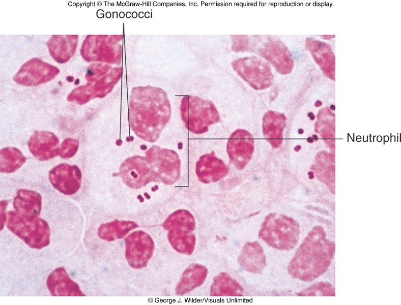
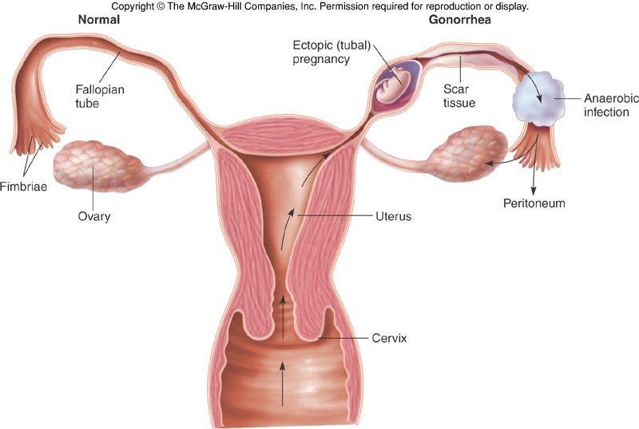
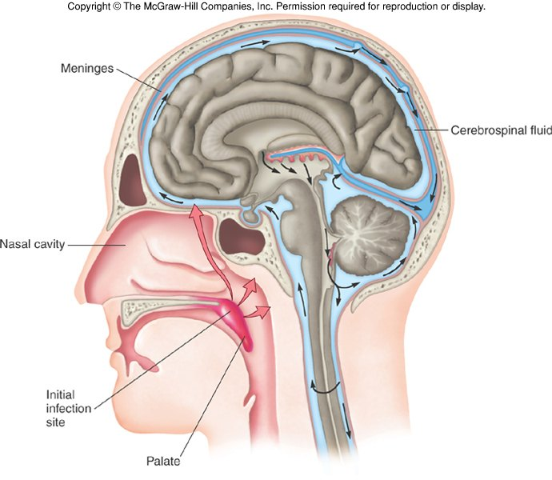
9.9 · Objective 1 — Branhamella / Moraxella and Acinetobacter
| Organism | Key facts |
|---|---|
| Branhamella catarrhalis, now Moraxella | Found in the nasopharynx; a significant opportunist in cancer, diabetic and alcoholic patients. Reclassified into the closely related genus Moraxella by 16S ribosomal ribonucleic acid gene sequence analyses. Diplococci on the mucous membranes of humans and other primates |
| Acinetobacter baumannii | A multidrug-resistant organism; coccobacilli. Becoming an important hospital-acquired infection, especially in military hospitals. The slide places it in “arid soil environments (such as Iraq and Afghanistan)”; see 9.11 on why that is the genus rather than this species |
9.10 · Objective 2 — Modes of transmission
| Organism | Reservoir or habitat | How humans acquire it |
|---|---|---|
| Staphylococcus aureus | Anterior nares (20–60% of adults), skin, nasopharynx, intestines; fomites | Through wounds, follicles or glands; from another infected site or a medical device (bacteremia); ingesting heat-stable enterotoxin (food intoxication); toxic shock with improper tampon use; community as well as hospital spread of resistant strains; shared towels, razors and toothbrushes |
| Coagulase-negative staphylococci | Skin and mucous membranes; apocrine glands; scalp, face and ear; skin, intestine, vagina | Penetrating broken skin (wound infection); nosocomial and opportunistic |
| Streptococcus pyogenes | Humans only; throat, nasopharynx, occasionally skin; inapparent carriers | Contact, droplets, food and fomites; enters by skin or pharynx; mostly children |
| Streptococcus agalactiae (group B) | Vagina, pharynx, large intestine | Transferred to the infant during vaginal delivery |
| Enterococci (group D) | Large intestine | Opportunistic urinary, wound and skin infection in the debilitated |
| Viridans streptococci | Gums, teeth, oral cavity | Dental or surgical procedures let them in; blood-borne to damaged valves |
| Streptococcus pneumoniae | Nasopharynx (5–50%) | Endogenous; aspiration into the lungs; middle ear by the eustachian tube; does not survive long outside its habitat |
| Neisseria gonorrhoeae | Strictly human | Sexual contact (low infectious dose; 1–2 hours on fomites); newborns through the birth canal |
| Neisseria meningitidis | Nasopharynx (3–30% of adults) | Close quarters, dormitories; from the nasopharynx into the bloodstream and across the blood-brain barrier |
| Moraxella | Nasopharynx | Opportunist in cancer, diabetic, alcoholic patients |
| Acinetobacter baumannii | Hospital environments (the genus lives in soil and water; see 9.11) | Hospital acquired, especially in military hospitals |
9.11 · Where the slides, the recording and the evidence disagree
The rule for these quizzes is that what is medically true wins. Each item below says what the slide or the recording says, what is true, and how the questions are keyed.
| Source says | What is true | How the quizzes handle it |
|---|---|---|
| Slide 38: group B treatment “usually with IV antibiotics during vaginal delivery; streptomycin is commonly used” — and the recording describes intravenous streptomycin [29:18] | Intrapartum prophylaxis for group B Streptococcus is intravenous penicillin (ampicillin the alternative; other drugs for penicillin allergy). Streptomycin is not used | No question names the intrapartum drug. The treatment question keys penicillin for groups A and B (slide 44) |
| Slide 14: toxic shock “can be transmitted to males during unprotected sex” | Toxic shock syndrome is a toxin illness from Staphylococcus aureus the person is colonized or infected with; it is not sexually transmitted. About half of cases today are not related to menstruation | Not asked. The tampon question says “classically associated”, not “usually” |
| Slide 30: superantigens release “tissue necrotic factor” | The cytokine is tumor necrosis factor | Keyed as the slide’s “strong monocyte and lymphocyte stimulants” |
| Slide 57: a candle jar, “in which most of the oxygen is depleted”; the recording calls chocolate agar a medium for “anaerobic cultures” [37:43, 44:16] | A candle jar raises carbon dioxide to a few percent and leaves most of the oxygen. Chocolate agar is an enriched medium for fastidious organisms such as Neisseria and the pneumococcus, often incubated in extra carbon dioxide; Neisseria are aerobic or microaerophilic, not anaerobes. (The Lecture 8 slide that calls chocolate agar “mainly used for anaerobic culturing” has the same problem) | Keyed as chocolate agar in a candle jar, with enhanced carbon dioxide as what the jar provides |
| Recording: pneumococcal vaccines “recommended every year” [38:48]; slide 53: a capsular antigen vaccine for older adults | Pneumococcal vaccines are not annual. Current United States adult schedules use conjugate vaccines as well | Only the children’s conjugate vaccine is keyed |
| Recording: a pregnant woman diagnosed with a sexually transmitted disease will very likely be advised to have a cesarean section [53:44] | Not true of gonorrhea, which is treated with antibiotics; the newborn is protected by eye prophylaxis | Keyed as topical antibiotic prophylaxis at birth (slide 70); routine cesarean appears only as a refuted distractor |
| Recording: group B screening is “usually a very rapid strep test for antibody detection” [28:56] | Screening late in pregnancy is by vaginal-rectal swab culture (or a nucleic acid test), not antibody detection | Keyed as the slide states it: screen and treat |
| Recording: the lower panel of slide 41 is “a coagulase test” [31:11] | The slide is titled Streptococcal ID tests and shows a slide agglutination reaction (positive = clumping), consistent with slide 40’s rapid antibody test; coagulase is a staphylococcal test | Not asked |
| Recording: the facial infection of slide 34 has “the slapped face look” [26:23] | “Slapped cheek” is the rash of erythema infectiosum (parvovirus B19), not a streptococcal infection; the slide shows impetigo and erysipelas | Not asked |
| Slide 71: “combined antibiotic therapies are often indicated” for gonorrhea | Current United States guidance is a single cephalosporin (ceftriaxone), adding doxycycline only when chlamydia has not been excluded | Not keyed |
| Slide 78 and the recording (“pretty rare”): Moraxella as an opportunist | Also a common cause of childhood otitis media — one of the three classic bacterial causes | Keyed as the slide’s opportunist in cancer, diabetic and alcoholic patients; no question calls it rare |
| Slides 23, 48, 50, 73: 17 Lancefield groups; 60–70% of bacterial pneumonia; 90 capsular types; serotypes A, B and C cause most meningococcal disease | About 20 Lancefield groups; the pneumococcus is the leading identified bacterial cause of pneumonia but at a much lower share; more than 100 capsular types; serogroups A, B, C, W, X and Y cause nearly all meningococcal disease | None of these numbers is asked |
| Slide 79: Acinetobacter baumannii coccobacilli “found in many arid soil environments (such as Iraq and Afghanistan)” | The genus Acinetobacter is common in soil and water, but Acinetobacter baumannii itself is rarely isolated from soil; the infections in service members wounded in Iraq and Afghanistan were traced to transmission inside military hospitals, not to the soil | The environment question was dropped. Keyed facts: multidrug-resistant coccobacilli, hospital acquired, especially in military hospitals |
| Slide 74: high-risk ages 6 months–3 years and 10–20 years | Close to current figures, which put the peaks in infants under 1 year and in adolescents and young adults (about 16–23) | Keyed as the slide states it; no option competes with it |
| Slide 77: the vaccine contains purified capsular antigens | True of the quadrivalent (A, C, W, Y) vaccines; the serogroup B vaccines are built on surface proteins instead, because the group B capsule is poorly immunogenic | Keyed as the slide states it: purified capsular antigens |
| Slide 7: penicillinase, and “another enzyme called beta-lactamase which behaves similarly” | Penicillinase is a beta-lactamase | No question sets the two apart |
Source: Cocci of Medical Importance: Gram positive and Gram negative (PAJ5200.Cocci of Med importance.pptx), Slides 1–79, the lecture recording of 2 October 2026, and the PAJ 5200 syllabus instructional objectives and Appendix 2.
10 · Gram-Positive Bacilli of Medical Importance
Instructional Objectives
- Compare and contrast the morphology, medium, laboratory tests, biochemical reactions, diseases, clinical manifestations, methods of treatment, and prevention of Gram-positive bacilli of medical importance.
- Describe the modes of transmission by which humans acquire Gram-positive bacilli of medical importance.
About 90 minutes with Dr. Webster, in two parts (46 and 44 minutes). Both transcripts read and compared (Notability’s own and an independent local transcription); every quote below appears in both unless marked. The recording begins at slide 6, so the title, objective, organism-list and scheme slides (1–5) have no audio. Unlike her Exam 1 lectures, this one signposts often — and it states two rules that cut the scope of the whole lecture.
| What was said | What it means for you |
|---|---|
| “By the way I’m not going to be testing you on the percentages. But you do need to know what is the most common, what’s the deadliest, how the different things work.” [part 1, 12:34] | Mortality rates, case counts and outbreak years are context, not exam material. What is examinable: the most common form, the deadliest form, and the mechanism. |
| “By the way, I’m not going to be asking you what antibiotics to use to treat these things because that’s what we have our PDRs [Physicians’ Desk References] for.” [part 2, 8:03] | The drug names on the treatment slides are not examinable. The other treatment methods are: antitoxin, debridement, hyperbaric oxygen, ventilator support, fecal microbiota transplant, hardware removal, treatment length, and the vaccines. |
| “You need to know the different forms and what they do. So most cases of anthrax are cutaneous…” [part 1, 8:49] and of pulmonary anthrax: “this is the most deadly form of anthrax. You need to know that.” [part 1, 11:41] | Cutaneous = most common; pulmonary (woolsorters’ disease) = most deadly (10.2). |
| “You do need to know that bacillus centrally located, Clostridium terminally located.” [part 1, 21:16] | Spore position is a diagnostic characteristic (10.1). The Clostridioides difficile terminal spores “look like a little tennis racket” (Notability; the local transcript heard “tennis ball”). [part 1, 44:24] |
| Gas gangrene: “caused by Clostridium perfringens most commonly and that would be the one I would want you to know.” [part 1, 20:48] Then “you need a mixed infection. You need a mixed infection” [part 1, 22:16] — prefaced in the local transcript by “underline this”. | The organism, and why a mixed infection matters: aerobes use up the oxygen so the anaerobic spores can grow (10.4). |
| The myonecrosis toxins: “at least 17 different ones and I’m not going to ask you to name them, but look at the things they do.” [part 1, 24:39] | Know the effects (red cells ruptured, white cells destroyed, connective tissue broken down by collagenase and hyaluronidase), not the toxin names. |
| “So, but remember floppy baby syndrome.” [part 1, 36:05] | Infant botulism: ingested spores germinate in the infant gut; flaccid paralysis (10.6). |
| Erysipelothrix: “You’re not going to need to worry too much about that one” [part 2, 0:24] and “this is the one I’m not really going to worry too much about” [part 2, 9:11]. Notability hears the first as “I’m not testing you on that”; the local transcript as “not stressing you on that”. | Slides 57–58 are kept in 10.8 for completeness; no quiz question is built on them. |
| Diphtheria: the pseudomembrane “is very characteristic of, for a diagnosis of this organism that you should know.” [part 2, 13:48] | Pseudomembrane in the throat = respiratory diphtheria (10.9). |
| “You need to know the new name because this has been relatively recently reclassified. Propionibacterium is now called Cutibacterium.” [part 2, 16:02] (She also said slide 59 still carries the old name and that she would correct and repost the deck.) | Cutibacterium acnes (10.10). |
| The Mycobacterium species table (slide 68): “Another chart I am not asking you to memorize.” [part 2, 20:58] | Know that many species exist and that non-tuberculous species trouble the immunosuppressed; do not learn the table. |
| “Clinical tuberculosis is divided into three different stages that you need to know.” [part 2, 24:39] | Primary, secondary (reactivation or reinfection), disseminated (extrapulmonary) (10.11). |
| The non-tuberculous mycobacteria (slide 90): “don’t worry about being tested but just to show you” [part 2, 38:14] | Slide 90 is context only; it is summarized in 10.11 and no question is built on it. |
| Actinomyces israelii: “this is one that you should know because it is normally it’s a harmless organism because it’s superficial; when it is no longer superficial is when you have an issue with it.” [part 2, 41:38] | Disease follows access to deeper tissue (10.13). |
Things said that are not on a slide — consistent with the deck, useful as hooks, each present in both transcripts:
- Hydrogen peroxide in a deep puncture wound: flooded deep into the wound, the catalase in your tissues releases oxygen, which inhibits the anaerobic clostridia; on a surface wound it mostly lifts dirt by bubbling. [part 1, 23:16–23:50]
- The rusty nail: “the rust has nothing to do with it” — the danger is the puncture wound. [part 1, 27:51]
- Why boiling home-canned food for 10 minutes works: the botulinum toxin is sensitive to heat even though the spore is not. [part 1, 39:03]
- Why infants and not adults: the infant digestive system is immature, so swallowed spores meet the anaerobic conditions that let them germinate. [part 1, 34:20]
- The Mantoux test is read at 48–72 hours because it is a type IV (delayed) hypersensitivity reaction — the link back to Lecture 7. [part 2, 28:08]
- Cutibacterium: routine cultures used to be read at one to two days and thrown away, so a growth that takes more than six days was missed. [part 2, 17:50]
- Leprosy spreads with prolonged close living, not casual contact. [part 2, 33:35]
- Actinomyces viscosus in the mouth is why patients with heart conditions or implants take antibiotic prophylaxis before dental work. [part 2, 42:15]
One slip to ignore. Summing up tetanus she said “just blocking the release of the neuromuscular junction” [part 1, 29:14] (both transcripts). That is botulism’s mechanism. Tetanospasmin blocks the inhibitory transmitters from spinal neurons (slides 29–30), which is why tetanus is spastic and botulism flaccid. See 10.5.
10.1 · Objective 1 — Sorting the Gram-positive bacilli
The medically important Gram-positive bacilli divide into three general groups on two properties, the presence or absence of endospores and acid-fastness: the endospore-formers, the non-endospore-formers, and those of irregular shape and staining.
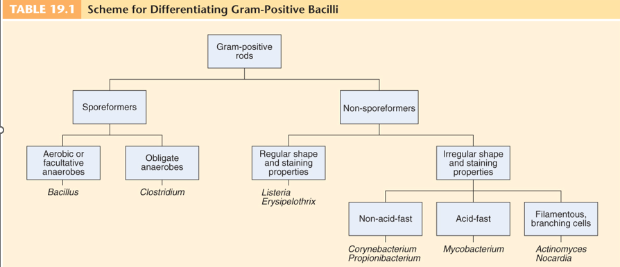
| Genus Bacillus | Genus Clostridium | |
|---|---|---|
| Shape and stain | Gram-positive, endospore-forming, motile rods | Gram-positive, spore-forming rods |
| Spore position | Central (a diagnostic characteristic) | Terminal; oval or spherical spores produced only under anaerobic conditions |
| Oxygen and catalase | Aerobic (aerobic or facultatively anaerobic in the scheme), catalase positive | Anaerobic, catalase negative |
| Habitat and lifestyle | Mostly saprobic; primary habitat soil; versatile in degrading complex macromolecules | About 120 species; spores in soil, skin, intestine and vagina; opportunistic pathogens |
| Products | Antibiotics: gramicidin, tyrocidine, bacitracin, mycobacillin, surfactin, bacilysin, subtilin | Organic acids, alcohols and exotoxins among the most toxic substances on earth |
| Infections | Two species of medical importance: B. anthracis, B. cereus | Two types: wound and tissue infections, and food intoxications |
The spore-forming genera are Bacillus, Clostridium, Clostridioides and Sporolactobacillus (not pathogenic; a potential probiotic).
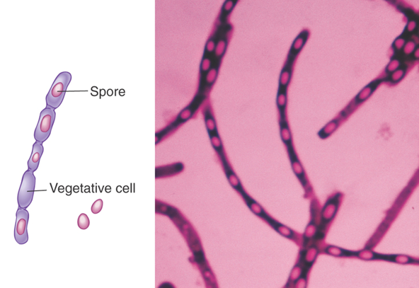
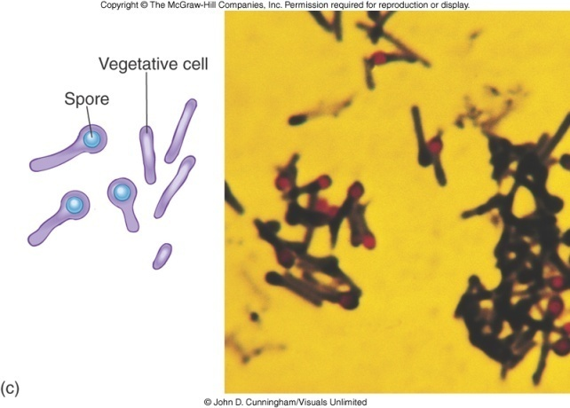
Regular non-spore-forming rods stain uniformly and do not assume pleomorphic shapes (Lactobacillus, Listeria monocytogenes, Erysipelothrix rhusiopathiae). Irregular ones are pleomorphic and stain unevenly; the deck says all produce catalase and their cell walls have mycolic acids and a unique peptidoglycan (Corynebacterium, Propionibacterium/Cutibacterium, Mycobacterium, Actinomyces, Nocardia) — see 10.15 for the exceptions. Corynebacterium and Mycobacterium share mycolic acids in the wall.
10.2 · Objective 1 — Bacillus anthracis and anthrax
| Heading | Bacillus anthracis |
|---|---|
| Significance | The organism with which Koch’s postulates were established (isolate it from every case, grow it in pure culture, reproduce the disease, re-isolate it) |
| Morphology | Large, block-shaped rods in chains, with central spores |
| Disease | Anthrax, a zoonotic infection |
| Why it worries us | Category A priority pathogen — a potential weapon of bioterrorism; an accidental release from a Soviet bioweapon facility in 1979 was highly fatal |
| Virulence: capsule | A polypeptide capsule that makes the cell hard for phagocytes to engulf |
| Virulence: the three-part exotoxin | Protective antigen binds host cells and creates a receptor site for the other two components. Edema factor impairs phagocytosis and inhibits tumor necrosis factor and interleukin 6 production by monocytes. Lethal factor: at low levels it inhibits release of interleukin 1 and tumor necrosis factor alpha, damping the immune response; at high levels it lyses macrophages, releasing high levels of interleukin 1, tumor necrosis factor alpha and nitric oxide. Excessive release of these cytokines can trigger a massive inflammatory response and the shock cascade, like septic shock. |
| Form | How it is acquired | What happens |
|---|---|---|
| Cutaneous — the most common form (about 95% of human cases) | Spores enter through cuts or incisions in the skin, germinate in the tissue and grow | A painless papule that rapidly becomes an ulcer surrounded by vesicles and finally a black necrotic eschar |
| Injection | Injecting contaminated heroin; identified in addicts in northern Europe, not yet in the United States | Like cutaneous anthrax, but the infection is in the deep muscle where the drug was injected, so it spreads faster and is harder to recognize and treat |
| Pulmonary (woolsorters’ disease) — the most deadly form | Inhaling spores from infected animal products (wool of infected sheep) or soil | May be latent for two months or more. Alveolar macrophages engulf the spores and the exotoxins kill the macrophages en masse: cough, headache, fever, chills, vomiting, chest and abdominal pain, then worsening fever, edema, capillary thrombosis and cardiovascular shock; about half develop meningitis. Untreated, nearly always fatal within about three days of symptoms |
| Gastrointestinal | Eating meat from an infected animal | Ulcers of the mouth and esophagus, localized lymphadenopathy; nausea, vomiting and malaise if the upper intestine is invaded; sepsis if the large intestine is invaded |
| Meningitis | A complication of any form; up to half of pulmonary cases | Typical meningitis: altered mental status, headache, fever, nausea and vomiting, seizures |
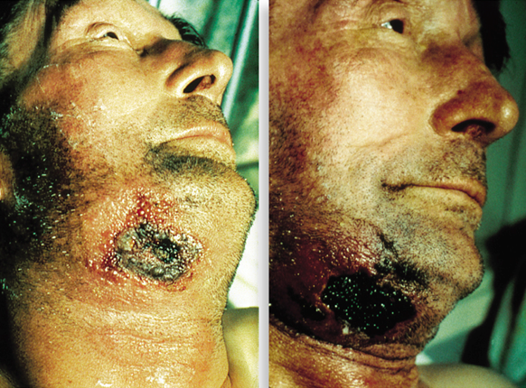
Treatment and prevention. Treated with antibiotics; pulmonary anthrax is also treated with antitoxin to neutralize the toxins. Livestock are protected with live spores and toxoid. The human vaccine, Biothrax, is a purified toxoid given to high-risk occupations and military personnel, not to anyone under 18 or over 65; a primary series with annual boosters, and a three-dose series with antibiotics after exposure. Its side effects have prompted research into alternative vaccines (see 10.15).
10.3 · Objective 1 — Bacillus cereus
| Heading | Bacillus cereus |
|---|---|
| Disease | Most commonly a foodborne illness; spores are very commonly airborne and dustborne |
| Foods | Grows in rice, potatoes and meat; the spores survive cooking and reheating (the risk is cooked food left out before refrigerating) |
| Toxins | Symptoms are due to exotoxin. Diarrheal form: a large molecular weight protein. Emetic (vomiting) form: a low molecular weight, heat-stable peptide. |
| Course and treatment | About 24 hours; no treatment |
| Other infections | Severe eye infections, progressive pneumonia, nosocomial post-surgical infections; rare clinical sepsis from contaminated injection sites traced to contaminated alcohol prep pads. Increasingly reported in the immunosuppressed; may resist beta-lactam antibiotics; new, sometimes highly pathogenic strains in the B. cereus group can be misidentified, delaying treatment |
| Welder’s anthrax | A recently recognized disease of metal workers: anthrax toxins have been identified, but they are produced by Bacillus cereus. Metal fume inhalation may predispose |
10.4 · Objective 1 — Clostridium perfringens: gas gangrene and food poisoning
| Heading | Myonecrosis (anaerobic cellulitis) / gas gangrene |
|---|---|
| Organism | Clostridium perfringens is the most common cause; C. novyi, C. septicum and other species can also cause it |
| Source | Spores in soil, human skin, intestine and vagina; about 90% of contaminated wounds carry the organism but only about 2% develop myonecrosis — host factors |
| Predisposing wounds | Surgical incisions, compound fractures, diabetic ulcers, septic abortions, puncture wounds, gunshot wounds |
| Why a mixed infection | Aerobic bacteria in the wound use up the oxygen, producing the low oxygen tension the anaerobes need to grow |
| Pathology | Not highly invasive: it requires damaged, dead tissue and anaerobic conditions. These stimulate spore germination, vegetative growth and release of exotoxins and other virulence factors. Fermentation of muscle carbohydrates forms the gas and destroys more tissue |
| Virulence factors | At least 17 toxins (names not examinable): one ruptures red blood cells and causes edema and tissue destruction, another destroys white blood cells. Enzymes: collagenase, hyaluronidase and deoxyribonuclease, which break down connective tissue and let the infection spread |
| Extent | Anaerobic cellulitis: gas and tissue damage, but it stays localized. True myonecrosis: the local infection leads to spreading tissue damage with fever, tachycardia and blackened necrotic tissue |
| Treatment | Debridement of diseased tissue (difficult if intestinal), possibly amputation, large doses of antibiotics, and hyperbaric oxygen, which floods the tissue with oxygen and inhibits the anaerobe |
| Prevention | Immediate cleansing of dirty wounds, deep wounds, compound fractures and infected incisions. No vaccine is available. |
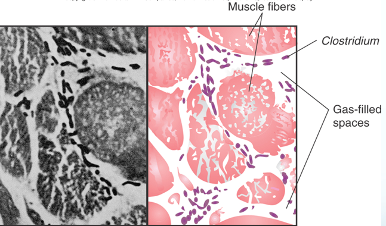
Clostridial food poisoning compared. Clostridium botulinum causes a rare but severe intoxication, usually from home-canned food (10.6). Clostridium perfringens causes a mild intestinal illness and is a very common food poisoning. In C. perfringens gastroenteritis the foods most commonly involved are meat, fish and undercooked vegetables: spores survive cooking that was not thorough enough, germinate and multiply (especially if the food is unrefrigerated), and once eaten the toxin is produced in the intestine, acting on epithelial cells — acute abdominal pain, diarrhea and nausea, with rapid recovery.
10.5 · Objective 1 — Clostridium tetani and tetanus
| Heading | Clostridium tetani |
|---|---|
| Habitat and disease | A common resident of soil and the gastrointestinal tracts of animals; causes tetanus (lockjaw), a neuromuscular disease. A strict anaerobe: low oxygen tension is needed to germinate the spores and make toxin |
| Who gets it | Most commonly older (geriatric) patients and intravenous drug users; neonates in developing countries |
| Entry | Spores usually enter through accidental puncture wounds, also burns, umbilical stumps (neonatal tetanus), frostbite and crushed body parts |
| Incubation | 4–10 days; the shorter the incubation, the more serious the disease. Delayed care, short incubation and head wounds worsen the outlook |
| Mechanism | Tetanospasmin, a neurotoxin, enters at motor nerve endings and acts on the spinal inhibitory neurons, blocking release of the inhibitory transmitters gamma-aminobutyric acid and glycine, so muscles contract uncontrollably (risus sardonicus, arching spasms) |
| Death | Most often from paralysis of the respiratory muscles |
| Treatment | Aimed at the toxemia and the infection and at maintaining homeostasis: antitoxin (human tetanus immune globulin) inactivates circulating toxin but does not counteract toxin already bound; antibiotics for the infection; muscle relaxants |
| Prevention | A vaccine; a booster every 10 years |
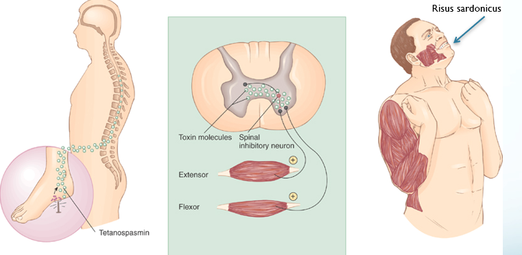
10.6 · Objective 1 — Clostridium botulinum and botulism
Botulism is an intoxication associated with inadequate food preservation. C. botulinum is a spore-forming anaerobe of soil and water. Foodborne botulism is most prevalent with low-acid, home-canned foods (green beans, corn), but meats, fish and dairy can carry it, and rarely commercial foods (the 2007 Castleberry chili sauce outbreak). Pathogenesis: spores are on the food when it is gathered; if reliable temperature and pressure are not achieved, the air is evacuated but the spores remain; anaerobic conditions favor germination and growth; the toxin, botulin, is released and carried to neuromuscular junctions, where it blocks the release of acetylcholine, needed for muscle contraction.
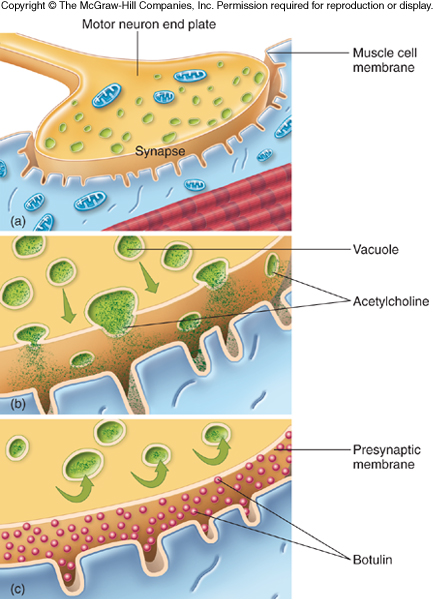
| Heading | Botulism |
|---|---|
| Symptoms | Double or blurred vision, difficulty swallowing, dizziness; sometimes nausea and vomiting; descending muscular paralysis; respiratory compromise |
| Outcome | Mortality has fallen because ventilators support breathing through the paralysis |
| Diagnosis and treatment | Find the toxin in the food, intestinal contents or feces; give antitoxin with cardiac and respiratory support |
| Prevention | Proper preserving and handling of canned foods (sodium nitrite, salt or vinegar as preservatives); discard bulging cans; boil home-bottled foods for at least 10 minutes |
| Form | How it arises |
|---|---|
| Infant botulism — the most common form (up to 80% of cases each year; 66% in the 2021 national survey) | Ingested spores germinate and release toxin in the infant gut; flaccid paralysis, “floppy baby syndrome”. Associated with honey or homemade baby food (honey pacifiers from Mexico, 2018; a contaminated baby formula outbreak, 2026) |
| Foodborne | Eating toxin made in improperly preserved, usually home-canned, food |
| Wound | Spores enter a wound and cause the food poisoning symptoms; intravenous drug users, often with black tar heroin |
| Iatrogenic | Cosmetic or therapeutic procedures using botulinum toxin cause systemic intoxication |
| Intestinal colonization | A person over age 1 harbors the toxin in the intestinal tract |
10.7 · Objective 1 — Clostridioides difficile
| Heading | Clostridioides difficile |
|---|---|
| Name | Formerly Clostridium, but differentiated by ribonucleic acid sequencing into its own genus |
| Habitat | A normal resident of the colon in low numbers; relatively non-invasive |
| Pathogenesis | Broad-spectrum antibiotics kill the other bacteria, letting it overgrow; it produces enterotoxins that damage the intestines |
| Disease | C. difficile-associated disease: antibiotic-associated (pseudomembranous) colitis, toxic megacolon, perforation of the colon. A major cause of diarrhea in hospitals; increasingly common in community-acquired diarrhea; a 2005 strain makes far more exotoxin; named one of the top three antibiotic-related threats (with carbapenem-resistant Enterobacterales and drug-resistant gonorrhea) |
| Populations at risk | Antibiotic exposure (70% of cases used antibiotics in the prior 12 weeks); gastrointestinal surgery; long stays in healthcare settings; serious underlying illness; immunocompromise; advanced age; gastric acid inhibitors such as famotidine (Pepcid) and omeprazole (Prilosec); trehalose sugar |
| Progression | Watery diarrhea, fever, loss of appetite, nausea, abdominal pain and tenderness, then the intestinal lining becomes necrotic and sloughs off as the pseudomembrane, and the wall can perforate |
| Treatment | Mild cases: fluid and electrolyte replacement and withdrawal of the antimicrobial (withdrawing the inciting antimicrobial is part of managing every case). Severe cases: oral antibiotics (see 10.15). Fecal microbiota transplant: donor cultures by colonoscope or nasogastric tube, or as capsules, restoring the normal flora (as much as 90% effective) |
| Prevention | Increased precautions to prevent spread |
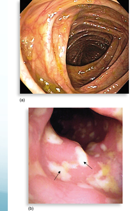
10.8 · Objective 1 — Regular non-spore-formers: Lactobacillus and Listeria
Lactobacillus (L. acidophilus, L. salivarius, L. fermentum) is beneficial normal flora of the intestinal and vaginal tracts. It produces lactic acid, acetic acid, hydrogen peroxide and other antimicrobial substances that inhibit pathogens. Antibiotic therapy can interrupt its activity and allow a superinfection by an opportunist (the recording’s example: a vaginal yeast infection).
| Heading | Listeria monocytogenes |
|---|---|
| Morphology | Non-spore-forming Gram-positive, ranging from coccobacilli to long filaments; 1–4 flagella; no capsule |
| Hardiness | Resistant to cold, heat, salt, pH extremes and bile (but killed by pasteurization and cooking) |
| Virulence | Induces phagocytosis and then replicates in the cytoplasm of host cells, which lets it avoid the humoral immune system |
| Reservoir | Primary reservoir soil and water; animal intestines |
| Food | Contaminates foods and grows during refrigeration. Most listeriosis comes from dairy products, poultry and meat (found in 12% of ground beef and 15% of chicken tested); the most recent outbreak was dairy |
| Disease | Often mild or subclinical in healthy adults (fever, diarrhea, sore throat). In immunocompromised patients, fetuses and neonates it affects the brain and meninges, with fetal loss and newborn deaths |
| Diagnosis | Culture requires a lengthy cold enrichment process; rapid tests by enzyme-linked immunosorbent assay, immunofluorescence and nucleic acid analysis |
| Prevention | Pasteurization and cooking (refrigeration does not stop it) |
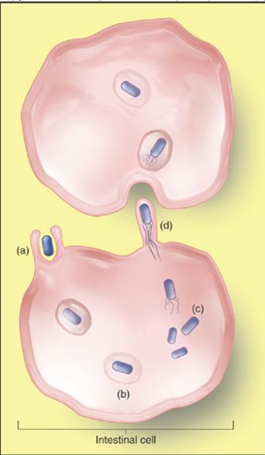
Erysipelothrix rhusiopathiae (slides 57–58; de-emphasized in the recording): a Gram-positive rod of animals and the environment whose primary reservoir is the tonsils of healthy pigs; it enters through skin abrasions and produces erysipeloid, dark red lesions on the hand; rarely septicemia or endocarditis; pigs are vaccinated.
10.9 · Objective 1 — Corynebacterium diphtheriae
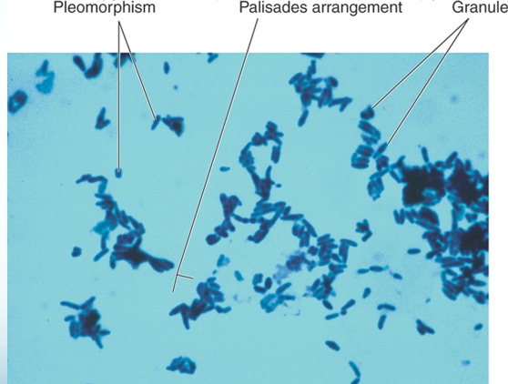
| Heading | Diphtheria |
|---|---|
| Reservoir | Healthy human carriers, so the potential for diphtheria is always present; respiratory diphtheria is rare in the United States |
| Who gets it | Non-immunized children living in crowded, unsanitary conditions |
| Transmission | Respiratory droplets from carriers or actively infected people |
| Forms | Respiratory (pharyngeal, tonsillar, laryngeal, nasal) or cutaneous (most common in the tropics) |
| Stage 1: local infection | Upper respiratory inflammation: sore throat, nausea, vomiting, swollen lymph nodes. The pseudomembrane, from solidified inflammatory fluid, is characteristic and can cause asphyxiation |
| Stage 2: toxemia | Diphtherotoxin targets the heart (myocarditis, abnormal electrocardiogram) and the nerves (muscle weakness, paralysis) |
| Diagnosis | Pseudomembrane and swelling; stain with alkaline methylene blue; conditions and history; serological assay |
| Treatment | Antitoxin in horse serum (since the 1890s), not usually given in non-respiratory cases; it does not neutralize bound toxin but neutralizes circulating toxin; antibiotics |
| Prevention | A toxoid vaccine series (at 6–8 weeks, 15 months and school age) with boosters |
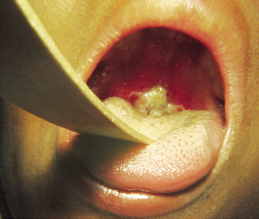
Also tested
- Diphtheria pseudomembrane. A gray-white pseudomembrane with swelling over the throat is indicative of respiratory diphtheria, produced by Corynebacterium diphtheriae.
10.10 · Objective 1 — Cutibacterium acnes
| Heading | Cutibacterium (formerly Propionibacterium) acnes |
|---|---|
| Name | The genus Propionibacterium is now Cutibacterium; C. acnes is the most common |
| Morphology and growth | Gram-positive rods; aerotolerant or anaerobic; slow growing (more than 6 days); nontoxigenic |
| Habitat and acne | A common resident of the pilosebaceous glands; causes acne via inflammatory mediators, not a toxin |
| Implant infections | Implicated in chronic invasive, implant, endovascular and central nervous system shunt infections. It forms a biofilm on prosthetics, raising its tolerance to antibiotics and immune defense |
| Diagnosis | Hard, because it grows so slowly: fluid from an infected site may show nothing for days, so prolonged incubation under strict anaerobic conditions is needed |
| Treatment | The hardware may need to be removed, with aggressive debridement; prolonged antibiotics (often 3–6 months) |
10.11 · Objective 1 — Mycobacteria and tuberculosis
Mycobacteria are acid-fast bacilli: Gram-positive irregular rods with mycolic acids and waxes in the wall, which is why the acid-fast stain (carbol fuchsin) needs heat to drive it in and why they Gram stain poorly. They are strict aerobes, produce catalase, form no capsules, flagella or spores, and grow slowly. Non-tuberculous mycobacteria are a problem in the immunosuppressed (the species table, slide 68, and the list on slide 90 are context only).
| Heading | Mycobacterium tuberculosis (the tubercle bacillus) |
|---|---|
| Virulence | No exotoxins or enzymes that contribute to infectiousness; complex waxes and cord factor prevent destruction by lysosomes and macrophages |
| Epidemiology | Predisposed by poor nutrition, a weakened immune system, poor access to care, lung damage and genetics; about a third of the world carries the bacillus; highest United States rate in recent immigrants. The bacillus is very resistant and is transmitted by airborne respiratory droplets; the infectious dose is about 10 cells |
| Infection versus disease | Only 5–10% of infected people develop clinical disease. Inactive (latent) tuberculosis is not contagious, can be detected by a blood or skin test, and may activate at any time. Untreated disease progresses slowly and mostly stays in the lungs |
| The three divisions of clinical tuberculosis | What happens |
|---|---|
| Primary | Bacilli are phagocytosed by alveolar macrophages and multiply inside them. After 3–4 weeks the immune system attacks, forming tubercles: granulomas of a central core of bacilli surrounded by white blood cells. If the center breaks down into necrotic caseous lesions, they gradually heal by calcification. Stimulates a cell-mediated response |
| Secondary (reactivation or reinfection) | If the patient does not recover, the bacilli reactivate; tubercles expand and drain into the bronchial tubes and upper respiratory tract: violent coughing, greenish or bloody sputum, fever, anorexia, weight loss, fatigue — “consumption”, because patients wasted away |
| Disseminated (extrapulmonary) | Bacilli spread to regional lymph nodes, kidneys, long bones, the genital tract, brain and meninges; tuberculous meningitis is grave even when treated |
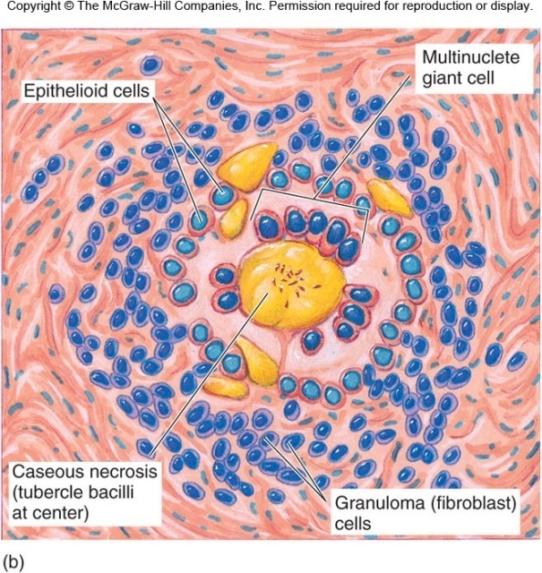
| Test | What it is |
|---|---|
| Mantoux (tuberculin) test | Intradermal purified protein derivative; read at 48–72 hours for induration, interpreted by size and the patient’s population factors (a delayed, type IV reaction) |
| QuantiFERON-TB Gold | Blood incubated with mycobacterial proteins; measures release of gamma interferon |
| False results | False positives: prior BCG (bacille Calmette-Guérin) vaccine, infection by other Mycobacterium species. False negatives: too early in infection; acquired immunodeficiency syndrome or other immunosuppression, where the patient cannot mount the response |
| Sputum and imaging | Acid-fast stain of sputum, Ziehl-Neelsen or fluorescent; laboratory cultivation; nucleic acid probes; chest X-ray for tubercles |
Management and prevention. 6–24 months of at least two drugs (a one-pill regimen combines three); preventive treatment for those at risk or latently infected. The vaccine used in other countries is the attenuated bacille Calmette-Guérin strain of Mycobacterium bovis.
10.12 · Objective 1 — Mycobacterium leprae and leprosy
| Heading | Mycobacterium leprae (Hansen’s bacillus) |
|---|---|
| Growth | A strict parasite: it has not been grown on artificial media or in tissue culture, so armadillos are used; the slowest growing of all species; it multiplies within host cells in large packets called globi |
| Disease | Leprosy (Hansen’s disease), a chronic disease beginning in the skin and mucous membranes and progressing into the nerves |
| Transmission | The mechanism is not fully verified; zoonotic transmission from armadillos is possible. Not highly virulent: health, living conditions and possibly a genetic marker influence susceptibility. Most Florida cases are in Central Florida (the I-4 corridor) |
| Course | Macrophages phagocytize the bacilli but a weakened macrophage or slow T cell response may not kill them. Incubation 2–5 years; untreated, the bacilli grow slowly in skin macrophages and the Schwann cells of peripheral nerves |
| Diagnosis | Symptoms, microscopy of lesions and history: numbness in hands and feet, loss of heat and cold sensitivity, muscle weakness, thickened earlobes, chronic stuffy nose; acid-fast bacilli in skin lesions, nasal discharge and tissue. Where care is scarce, the feather test checks skin sensation |
| Treatment | Long-term combined therapy: about 6 months for tuberculoid leprosy, up to 2 years for lepromatous, followed by extended single-drug treatment |
| Prevention | Constant surveillance of high-risk populations; bacille Calmette-Guérin has limited efficacy; a subunit vaccine is in trials |
| Tuberculoid | Lepromatous | |
|---|---|---|
| Lesions | Shallow, asymmetrical lesions; nerve damage with local loss of pain reception | Deeply nodular, severely disfiguring the face and extremities; widespread dissemination |
| T helper response | T helper 1 favors it; normal T-cell responsiveness to the bacillus | T helper 2 favors it; low or absent T-cell responsiveness |
| Organisms and infectivity | Low to undetectable organisms; low infectivity; granulomas and local inflammation | Florid growth in macrophages; high infectivity; hypergammaglobulinemia |
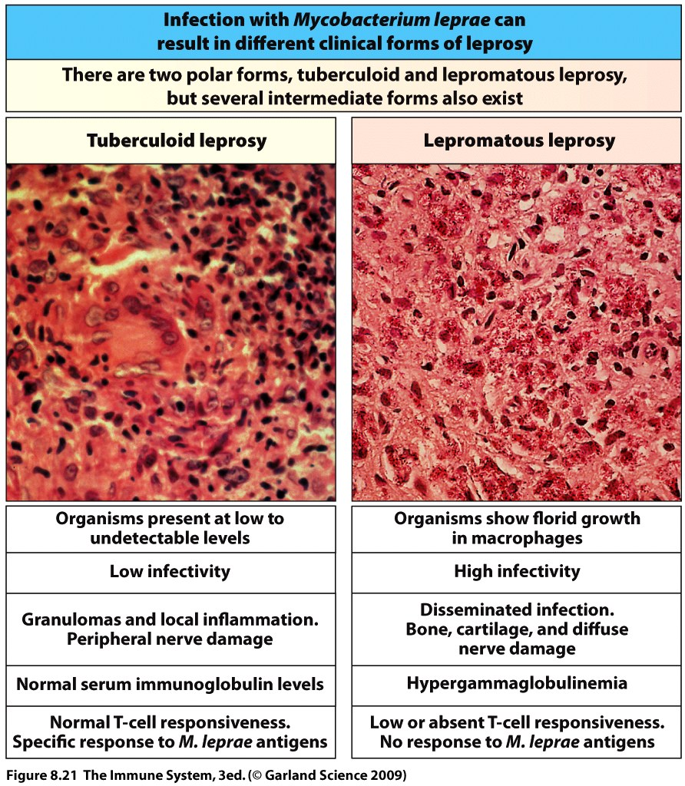
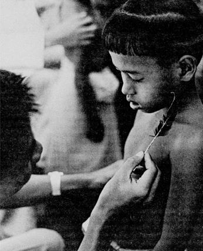
Also tested
- Lepromatous leprosy lesions. Deep, disfiguring nodules of the face are lepromatous leprosy, the widely disseminated form.
- T helper response in leprosy. A T helper 2 response tends to favor the lepromatous form, while T helper 1 favors the tuberculoid form.
10.13 · Objective 1 — Actinomyces and Nocardia (filamentous bacilli)
The genera Actinomyces and Nocardia are nonmotile filamentous bacteria related to the mycobacteria, and may cause chronic infection of skin and soft tissue.
| Organism | Key facts |
|---|---|
| Actinomyces israelii | A normally harmless resident of the oral cavity, digestive tract and genital tract; it causes chronic, hard-to-diagnose infection when it gains access to deeper tissues. Cervicofacial disease: a complication of oral infection. Thoracic: a necrotizing lung disorder. Abdominal: a complication of a burst appendix, gunshot wounds or ulcers. Uterine: a complication of intrauterine devices. Treated surgically and with antibiotics |
| Actinomyces viscosus | Dental caries, and some cases of endocarditis |
| Nocardia (nocardiosis) | Pulmonary, cutaneous or subcutaneous infections. Pulmonary nocardiosis resembles tuberculosis, and lesions may extend through the chest wall and disseminate to the brain and kidneys. Also causes mycetoma: a granulomatous inflammatory response in the deep dermis and subcutaneous tissue |
10.14 · Objective 2 — Modes of transmission
| Organism | How humans acquire it |
|---|---|
| Bacillus anthracis | A zoonosis from spores: through a cut (cutaneous), inhaled from animal wool or soil (pulmonary), eaten in meat from an infected animal (gastrointestinal), injected with contaminated heroin (injection) |
| Bacillus cereus | Food (rice, potatoes, meat), from airborne and dustborne spores that survive cooking and reheating; contaminated alcohol prep pads at injection sites |
| Clostridium perfringens | Spores from soil, skin, intestine or vagina in deep, dirty wounds with dead tissue (compound fractures, incisions, diabetic ulcers, septic abortions, puncture and gunshot wounds); undercooked meat and fish for food poisoning |
| Clostridium tetani | Spores from soil through puncture wounds, burns, frostbite, crush injuries, and the umbilical stump in newborns |
| Clostridium botulinum | Preformed toxin in low-acid, home-canned foods; swallowed spores in infants (honey, homemade baby food); spores in wounds (black tar heroin); medical use of the toxin |
| Clostridioides difficile | Overgrowth of the patient’s own colonic resident after broad-spectrum antibiotics; spread in hospitals and healthcare settings, where precautions prevent spread |
| Listeria monocytogenes | From soil, water and animal intestines into food: dairy, poultry and meat, where it grows during refrigeration |
| Corynebacterium diphtheriae | Respiratory droplets from healthy carriers or patients |
| Cutibacterium acnes | The patient’s own skin resident, onto implants and prosthetics |
| Mycobacterium tuberculosis | Airborne respiratory droplets; an infectious dose of about 10 cells |
| Mycobacterium leprae | Not fully verified; possibly zoonotic from armadillos; prolonged close contact (recording) |
| Actinomyces israelii | The patient’s own oral, digestive or genital resident reaching deeper tissue: oral infection, burst appendix, gunshot wounds, ulcers, intrauterine devices |
| Erysipelothrix rhusiopathiae | From pigs, through skin abrasions (de-emphasized) |
10.15 · Where the slide, the recording and current practice differ
The quizzes key what is medically true. Where a slide or the recording says something else, it is listed here rather than silently changed. None of these is the basis of a quiz question except where noted.
- Tetanus mechanism (slides 29–30; recording part 1, 29:14). Slide 29 says tetanospasmin binds motor nerve endings and blocks gamma-aminobutyric acid and glycine; the recording once summarized it as blocking release at the neuromuscular junction. The toxin enters at motor nerve endings, travels back to the spinal cord and blocks the inhibitory transmitters there (slide 30). Keyed: it blocks gamma-aminobutyric acid and glycine; the neuromuscular junction is botulism.
- Irregular rods (slide 59). “All produce catalase” and “possess mycolic acids” hold for Corynebacterium, Mycobacterium and Nocardia; Actinomyces is catalase negative and lacks mycolic acids, and Cutibacterium lacks mycolic acids. Keyed only as “Corynebacterium and Mycobacterium share mycolic acids”.
- Nocardia species (slide 94). The slide gives the tuberculosis-like lung disease to N. brasiliensis; pulmonary nocardiosis is mainly the N. asteroides complex, and N. brasiliensis is the classic cause of cutaneous disease and mycetoma. Keyed at genus level. The slide’s “often treated with cephalosporins” is incomplete (trimethoprim-sulfamethoxazole is the usual first-line drug); antibiotic choice is not examined.
- Anthrax vaccine (slide 16). “Biothrax — only vaccine approved by FDA [Food and Drug Administration]” and “6 inoculations over 1.5 years” are out of date: the current Biothrax schedule is five intramuscular doses with annual boosters, and a second, adjuvanted anthrax vaccine was licensed in 2023 for use after exposure. Not keyed.
- Infant botulism treatment (slide 40). “Infectious botulism treated with penicillin” applies to wound botulism (after antitoxin and debridement); antibiotics are not recommended for infant botulism, which is treated with botulism immune globulin. Not keyed.
- C. difficile treatment (slide 48). For severe disease, current guidelines prefer oral fidaxomicin or oral vancomycin; metronidazole is no longer recommended. And where the slide says mild cases respond to fluids and withdrawal of the antimicrobial, current guidelines also treat mild cases with an oral antibiotic. Keyed only as “withdrawing the antimicrobial is part of managing even a mild case”.
- Tuberculosis regimens (slide 79). Drug-susceptible tuberculosis is standardly six months (four drugs for two months, then two for four), and the preferred latent regimens are now shorter rifamycin-based courses, with nine months of isoniazid an alternative. Only “two or more drugs for months” is keyed.
- Leprosy (slide 89). The two-drug tuberculoid and three-drug lepromatous regimens match United States practice; the World Health Organization now gives all three drugs for both forms (6 and 12 months). Only “lepromatous is treated far longer” is keyed. The 2017 subunit vaccine step was clearance to begin clinical trials, not licensure.
- Honey. The recording advised no honey “to any child under about four, just to make sure”; the standard rule is no honey before 12 months. Not keyed.
- Listeria and heat (slide 53). “Resistant to heat” means it tolerates warmth better than most; pasteurization and cooking still kill it (slide 56). Not keyed.
- Motility (slide 7). The genus Bacillus is described as motile; B. anthracis itself is nonmotile. Not keyed.
- Myonecrosis mortality (slide 24). The recording said “if you don’t treat it, 20 to 30 percent”, a slip for “treated”; percentages are not examined.
Source: Gram Positive Bacilli of Medical Importance (Lecture 9 Dr. Webster Gram positive Bacilli.pptx), Slides 1–94, the 2 October 2026 recording, and the PAJ 5200 syllabus instructional objectives.